library(arrow)
library(xml2)
library(tidyverse)
DATA_DIR <- "../bolivia-data/Censo 2024/base_datos_csv_2024"
PERSONA_CSV <- file.path(DATA_DIR, "Persona_CPV-2024.csv")
CODEBOOK_RDS <- "../bolivia-data/Censo 2024/codebook_persona.rds"
PUEBLO_CATS <- "../bolivia-data/Censo 2024/pueblo_cats.rds"Bolivia Census 2024 — Person-level data
Setup
The person-level file (Persona_CPV-2024.csv) is ~3 GB with 11,365,333 rows × 118 columns, so we use the arrow package to query it lazily via dplyr without loading it into memory. Only call collect() after filtering/aggregating to a manageable size.
The codebook is parsed from BOL-INE-CPV-2024.xml (DDI format, 184 variables).
albo_vars <- readRDS(file.path(DATA_DIR, "albo_vars.rds"))
cel_geo <- readRDS(file.path(DATA_DIR, "cel_geo.rds"))
# Also load the pre-drawn 10k sample for any person-level illustration
persona_sample <- readRDS(file.path(DATA_DIR, "Persona_CPV-2024_sample10k.rds"))
cat("albo_vars dimensions:", nrow(albo_vars), "×", ncol(albo_vars), "\n")albo_vars dimensions: 11365333 × 10 glimpse(albo_vars)Rows: 11,365,333
Columns: 10
$ idep <int> 1, 1, 1, 1, 1, 1, 1, 1, 1, 1, 1, 1, 1, 1, 1, 1, 1, 1, 1, 1, 1,…
$ iprov <int> 1, 1, 1, 1, 1, 1, 1, 1, 1, 1, 1, 1, 1, 1, 1, 1, 1, 1, 1, 1, 1,…
$ imun <int> 1, 1, 1, 1, 1, 1, 1, 1, 1, 1, 1, 1, 1, 1, 1, 1, 1, 1, 1, 1, 1,…
$ urbrur <int> 1, 1, 1, 1, 1, 1, 1, 1, 1, 1, 1, 1, 1, 1, 1, 1, 1, 1, 1, 1, 1,…
$ albo_q1 <lgl> FALSE, FALSE, FALSE, FALSE, TRUE, TRUE, TRUE, FALSE, TRUE, FAL…
$ albo_q2 <lgl> FALSE, FALSE, FALSE, FALSE, TRUE, TRUE, TRUE, FALSE, TRUE, FAL…
$ albo_q3 <lgl> FALSE, TRUE, FALSE, FALSE, TRUE, FALSE, TRUE, FALSE, FALSE, FA…
$ albo_c <lgl> TRUE, TRUE, TRUE, TRUE, TRUE, TRUE, TRUE, TRUE, TRUE, TRUE, TR…
$ cel <dbl> 1, 2, 0, 0, 6, 5, 6, 0, 5, 0, 0, 0, 0, 0, 4, 6, 0, 2, 5, 7, 2,…
$ cel_q2 <lgl> TRUE, TRUE, FALSE, FALSE, TRUE, TRUE, TRUE, FALSE, TRUE, FALSE…Codebook
The DDI XML (BOL-INE-CPV-2024.xml) contains 184 variable entries. For categorical variables the response categories are embedded in the qstnLit CDATA field; derived variables (e.g. NIVEL_EDU, IDIOMA_MAT, CONDACT_19) have only a text description. The codebook is pre-parsed and saved as an RDS for convenience.
codebook <- readRDS(CODEBOOK_RDS)
# Helper: look up a variable label by name
cb_label <- function(varname) {
codebook |>
filter(variable == toupper(varname)) |>
pull(label)
}
codebook |> select(variable, label) |> print(n = 40)# A tibble: 184 × 2
variable label
<chr> <chr>
1 IDEP Departamento
2 IPROV Provincia
3 IMUN Municipio
4 I00 Nro. de vivienda
5 P24_PARENTES 24. Que parentesco tiene con la jefa o jefe del hogar
6 P25_SEXO 25. Es mujer u hombre
7 P26_EDAD 26. Cuantos años cumplidos tiene
8 P28_CN 28. Su nacimiento está inscrito en el registro civil boliv…
9 P29_CI 29. Tiene o tuvo cédula de identidad boliviana
10 P30A_PUBLIC 30.A. Cuando tiene problemas de salud acude a Puesto/centr…
11 P30B_CAJA 30.B. Cuando tiene problemas de salud acude a Caja de salud
12 P30C_PRIVAD 30.C. Cuando tiene problemas de salud acude a Consultorio/…
13 P30D_ATEDOM 30.D. Cuando tiene problemas de salud acude a Atención méd…
14 P30E_TRADIC 30.E. Cuando tiene problemas de salud acude a Médica(o) tr…
15 P30F_AUTOME 30.F. Cuando tiene problemas de salud acude a Farmacia sin…
16 P30G_CASERA 30.G. Cuando tiene problemas de salud acude a Remedios cas…
17 P31_AFILIADO 31. Actualmente esta registrada(o) o afiliada(o) a:
18 P32_PUEBLO_PER 32. Se autoidentifica con alguna nación pueblo indígena or…
19 P32_PUEBLO_COD 32. Se autoidentifica con alguna nación pueblo indígena or…
20 P331_IDIOHAB1_COD 33.1. Idiomas o lenguas que habla, según el mayor uso: Pri…
21 P332_IDIOHAB2_COD 33.2. Idiomas o lenguas que habla, según el mayor uso: Seg…
22 P333_IDIOHAB3_COD 33.3. Idiomas o lenguas que habla, según el mayor uso: Ter…
23 P334_IDIOHAB_NO 33.4. Idiomas o lenguas que habla, según el mayor uso: No …
24 P341_IDIOMAT_COD 34.1. Primer idioma o lengua en el que aprendió a hablar e…
25 P342_IDIOMAT_NO 34.2.Primer idioma o lengua en el que aprendió a hablar en…
26 P35_LUGNAC 35. Lugar de nacimiento
27 P35J_DEPTOCOD 35.2.A. Departamento de nacimiento
28 P35H1_PROVCOD 35.2.B. Provincia de nacimiento
29 P35H_MUNCOD 35.2.C. Municipio de nacimiento
30 P354_ANLLEGA 35.3.B. Año que llegó a Bolivia
31 P353_PAISNAC_COD 35.3. País de nacimiento
32 P36_LUGRES 36. Donde vive habitualmente
33 P361_ANRES 36.1. Desde que año reside
34 P36J_DEPTOCOD 36.2.A. Departamento de residencia habitual
35 P36H1_PROVCOD 36.2.B. Provincia de residencia habitual
36 P36H_MUNCOD 36.2.C. Municipio de residencia habitual
37 P363_PAISRES_COD 36.3. País de residencia habitual
38 P37_LUGRES5 37. Donde vivía el año 2019
39 P37J_DEPTOCOD 37.2.A. Departamento donde vivía el año 2019
40 P37H1_PROVCOD 37.2.B. Provincia donde vivía el año 2019
# ℹ 144 more rowsOpen dataset lazily
ds <- open_dataset(PERSONA_CSV, format = "csv", delimiter = ";")
cat(sprintf("Rows: %s | Columns: %d\n",
format(nrow(ds), big.mark = ","),
length(ds$schema$names)))Rows: 11,365,333 | Columns: 11810,000-row sample
A pre-drawn random sample is used for initial exploration so we avoid re-reading the full file on every render. The sample was drawn with set.seed(8143).
persona_sample <- readRDS(file.path(DATA_DIR, "Persona_CPV-2024_sample10k.rds"))
glimpse(persona_sample)Rows: 10,000
Columns: 118
$ idep <int> 8, 2, 3, 5, 2, 2, 7, 7, 3, 2, 5, 1, 3, 3, 2, 2, 7, 2…
$ iprov <int> 1, 8, 1, 1, 13, 13, 1, 1, 1, 1, 16, 1, 1, 2, 1, 1, 1…
$ imun <int> 1, 1, 1, 1, 2, 1, 1, 1, 1, 1, 1, 1, 1, 1, 5, 5, 1, 1…
$ i00 <int> 4442516, 1638938, 2555430, 3106273, 619633, 1610025,…
$ p24_parentes <int> 3, 2, 3, 1, 3, 6, 9, 3, 3, 1, 1, 6, 2, 1, 1, 3, 3, 1…
$ p25_sexo <int> 2, 1, 2, 1, 1, 2, 1, 2, 2, 2, 1, 2, 1, 2, 2, 2, 1, 1…
$ p26_edad <int> 5, 48, 4, 64, 6, 6, 68, 23, 13, 27, 48, 3, 23, 63, 6…
$ p28_cn <int> 1, 1, 1, 1, 1, 1, 1, 1, 1, 1, 1, 1, 1, 1, 1, 1, 1, 1…
$ p29_ci <int> 1, 1, 1, 1, 1, 1, 1, 1, 1, 1, 1, 1, 1, 1, 1, 1, 1, 1…
$ p30a_public <int> 2, 1, 1, 2, 1, 1, 1, 2, 2, 1, 2, 2, 1, 2, 1, 1, 1, 1…
$ p30b_caja <int> 2, 2, 2, 1, 2, 2, 2, 1, 2, 2, 2, 2, 2, 1, 2, 2, 2, 2…
$ p30c_privad <int> 1, 2, 2, 2, 1, 2, 2, 2, 2, 1, 2, 2, 2, 2, 2, 2, 2, 2…
$ p30d_atedom <int> 2, 2, 2, 2, 2, 2, 2, 2, 2, 2, 2, 2, 2, 2, 2, 2, 2, 2…
$ p30e_tradic <int> 2, 2, 1, 2, 1, 2, 2, 2, 2, 2, 2, 2, 2, 1, 2, 2, 2, 2…
$ p30f_autome <int> 1, 1, 1, 2, 1, 1, 2, 1, 1, 1, 2, 2, 1, 1, 1, 1, 2, 1…
$ p30g_casera <int> 1, 1, 1, 2, 1, 2, 2, 2, 1, 1, 1, 1, 1, 1, 1, 2, 2, 1…
$ p31_afiliado <int> 4, 2, 1, 2, 9, 1, 4, 1, 2, 4, 1, 1, 1, 2, 1, 4, 1, 1…
$ p32_pueblo_per <int> 9, 1, 2, 1, 1, 1, 2, 2, 2, 2, 1, 2, 1, 1, 2, 2, 2, 2…
$ p32_pueblo_cod <int> NA, 3, NA, 28, 3, 3, NA, NA, NA, NA, 28, NA, 28, 28,…
$ p331_idiohab1_cod <int> 6, 6, 6, 6, 6, 6, 6, 6, 6, 6, 27, 6, 6, 6, 6, 6, NA,…
$ p332_idiohab2_cod <int> NA, NA, NA, 27, NA, NA, NA, NA, NA, NA, 6, NA, 27, 2…
$ p333_idiohab3_cod <int> NA, NA, NA, NA, NA, NA, NA, NA, NA, NA, NA, NA, NA, …
$ p334_idiohab_no <int> NA, NA, NA, NA, NA, NA, NA, NA, NA, NA, NA, NA, NA, …
$ p341_idiomat_cod <int> 999, 6, 6, 6, 6, 6, 6, 6, 6, 6, 27, 6, 6, 6, 6, 6, N…
$ p342_idiomat_no <int> NA, NA, NA, NA, NA, NA, NA, NA, NA, NA, NA, NA, NA, …
$ p35_lugnac <int> 9, 2, 1, 1, 1, 1, 1, 1, 1, 1, 1, 1, 1, 1, 2, 1, 2, 1…
$ p35j_deptocod <int> NA, 2, NA, NA, NA, NA, NA, NA, NA, NA, NA, NA, NA, N…
$ p35h1_provcod <int> NA, 1, NA, NA, NA, NA, NA, NA, NA, NA, NA, NA, NA, N…
$ p35h_muncod <int> NA, 1, NA, NA, NA, NA, NA, NA, NA, NA, NA, NA, NA, N…
$ p354_anllega <int> NA, NA, NA, NA, NA, NA, NA, NA, NA, NA, NA, NA, NA, …
$ p353_paisnac_cod <int> NA, NA, NA, NA, NA, NA, NA, NA, NA, NA, NA, NA, NA, …
$ p36_lugres <int> 1, 1, 1, 1, 1, 1, 1, 1, 1, 1, 1, 1, 1, 1, 1, 1, 1, 1…
$ p361_anres <int> 9999, 1976, 2020, 9999, 9999, 2017, 9999, 2000, 2010…
$ p36j_deptocod <int> NA, NA, NA, NA, NA, NA, NA, NA, NA, NA, NA, NA, NA, …
$ p36h1_provcod <int> NA, NA, NA, NA, NA, NA, NA, NA, NA, NA, NA, NA, NA, …
$ p36h_muncod <int> NA, NA, NA, NA, NA, NA, NA, NA, NA, NA, NA, NA, NA, …
$ p363_paisres_cod <int> NA, NA, NA, NA, NA, NA, NA, NA, NA, NA, NA, NA, NA, …
$ p37_lugres5 <int> 9, 1, 4, 1, 1, 1, 1, 1, 1, 1, 1, 4, 1, 1, 1, 1, 4, 1…
$ p37j_deptocod <int> NA, NA, NA, NA, NA, NA, NA, NA, NA, NA, NA, NA, NA, …
$ p37h1_provcod <int> NA, NA, NA, NA, NA, NA, NA, NA, NA, NA, NA, NA, NA, …
$ p37h_muncod <int> NA, NA, NA, NA, NA, NA, NA, NA, NA, NA, NA, NA, NA, …
$ p373_paisres5_cod <int> NA, NA, NA, NA, NA, NA, NA, NA, NA, NA, NA, NA, NA, …
$ p38_asiste <int> 9, 8, 8, 8, 5, 5, 8, 7, 5, 7, 8, 8, 8, 8, 8, 8, 8, 8…
$ p39_tipoest <int> 9, NA, NA, NA, 1, 1, NA, 1, 1, 2, NA, NA, NA, NA, NA…
$ p40_lee <int> 2, 1, NA, 1, 1, 1, 1, 1, 1, 1, 1, NA, 1, 1, 2, 1, NA…
$ p41a_nivel <int> 3, 9, NA, 12, 3, 7, 7, 8, 8, 11, 4, NA, 8, 11, 4, 8,…
$ p41b_curso <int> 1, 2, NA, 1, 2, 1, 5, 6, 1, 4, 5, NA, 6, 5, 2, 3, NA…
$ p42a_ver <int> 1, 2, NA, 1, 1, 1, 3, 1, 1, 1, 2, NA, 1, 2, 1, 1, NA…
$ p42b_oir <int> 1, 2, NA, 1, 1, 1, 2, 1, 1, 1, 1, NA, 1, 1, 1, 1, NA…
$ p42c_camina <int> 1, 1, NA, 1, 1, 1, 1, 1, 1, 1, 1, NA, 1, 1, 1, 1, NA…
$ p42d_comuni <int> 1, 1, NA, 1, 1, 1, 1, 1, 2, 1, 1, NA, 1, 1, 2, 2, NA…
$ p43_pago <int> NA, 1, NA, 2, NA, NA, 1, 2, 2, 1, 2, NA, 2, 2, 2, 1,…
$ p44_nego <int> NA, NA, NA, 2, NA, NA, NA, 2, 2, NA, 2, NA, 2, 2, 2,…
$ p45_agro <int> NA, NA, NA, 1, NA, NA, NA, 2, 2, NA, 1, NA, 2, 1, 2,…
$ p46_dest <int> NA, NA, NA, 2, NA, NA, NA, NA, NA, NA, 2, NA, NA, 1,…
$ p47_otro <int> NA, NA, NA, 1, NA, NA, NA, 3, 3, NA, 3, NA, 3, NA, 3…
$ p48_nocu <int> NA, NA, NA, NA, NA, NA, NA, 6, 4, NA, 6, NA, 6, NA, …
$ p49_ocu_1d <int> NA, 7, NA, 2, NA, NA, 5, NA, NA, 7, NA, NA, NA, 2, N…
$ ocu_1d_19 <int> NA, 7, NA, 2, NA, NA, 5, NA, NA, 7, NA, NA, NA, 2, N…
$ p50_semp <int> NA, 2, NA, 2, NA, NA, 9, NA, NA, 1, NA, NA, NA, 9, N…
$ p51_actec_2d <int> 0, 3, 0, 16, 0, 0, 7, 0, 0, 6, 0, 0, 0, 16, 0, 7, 0,…
$ act_eco_2d_19 <int> NA, 3, NA, 16, NA, NA, 7, NA, NA, 6, NA, NA, NA, 16,…
$ p52_mov <int> NA, 2, NA, 2, NA, NA, 2, NA, NA, 2, NA, NA, NA, 2, N…
$ p52_dep_mov_cod <int> NA, NA, NA, NA, NA, NA, NA, NA, NA, NA, NA, NA, NA, …
$ p52_mun_mov_cod <int> NA, NA, NA, NA, NA, NA, NA, NA, NA, NA, NA, NA, NA, …
$ p52_pais_mov_cod <int> NA, NA, NA, NA, NA, NA, NA, NA, NA, NA, NA, NA, NA, …
$ p53_ecivil <int> NA, 1, NA, 5, NA, NA, 5, 6, 6, 6, 2, NA, 2, 1, 5, 6,…
$ p54_hvtot <int> NA, 2, NA, 3, NA, NA, 7, NA, NA, NA, 4, NA, 1, NA, N…
$ p54a_hvtot_muj <int> NA, 0, NA, 0, NA, NA, 4, NA, NA, NA, 3, NA, 0, NA, N…
$ p54b_hvtot_hom <int> NA, 2, NA, 3, NA, NA, 3, NA, NA, NA, 1, NA, 1, NA, N…
$ p55_hstot <int> NA, 2, NA, 3, NA, NA, 2, NA, NA, NA, 4, NA, 1, NA, N…
$ p55a_hstot_muj <int> NA, 0, NA, 0, NA, NA, 0, NA, NA, NA, 3, NA, 0, NA, N…
$ p55b_hstot_hom <int> NA, 2, NA, 3, NA, NA, 2, NA, NA, NA, 1, NA, 1, NA, N…
$ p56_edadmad <int> NA, 999, NA, 20, NA, NA, 22, NA, NA, NA, 28, NA, 22,…
$ p57a_uhnacmes <int> NA, 7, NA, 10, NA, NA, 88, NA, NA, NA, 7, NA, 3, NA,…
$ p57b_uhnacan <int> NA, 2001, NA, 1995, NA, NA, 1994, NA, NA, NA, 2015, …
$ p58_uhsobre <int> NA, 1, NA, 1, NA, NA, 2, NA, NA, NA, 1, NA, 1, NA, N…
$ p59_atparto <int> NA, 1, NA, 1, NA, NA, 2, NA, NA, NA, 6, NA, 1, NA, N…
$ edad_qui <int> 2, 10, 1, 13, 2, 2, 14, 5, 3, 6, 10, 1, 5, 13, 14, 4…
$ g_edad <int> 1, 2, 1, 2, 1, 1, 3, 2, 1, 2, 2, 1, 2, 2, 3, 2, 1, 2…
$ g_edad_bol <int> 1, 2, 1, 3, 1, 1, 3, 2, 1, 2, 2, 1, 2, 3, 3, 2, 1, 2…
$ p31_cobersalud <int> 2, 1, 1, 1, NA, 1, 2, 1, 1, 2, 1, 1, 1, 1, 1, 2, 1, …
$ p41a_nivel_act <int> 3, 9, NA, 12, 3, 7, 7, 8, 8, 11, 7, NA, 8, 11, 7, 8,…
$ p41b_curso_act <int> 1, 2, NA, 1, 2, 1, 5, 6, 1, 4, 5, NA, 6, 5, 2, 3, NA…
$ nivel_edu <int> NA, 4, NA, 4, NA, NA, 2, 3, NA, 4, 2, NA, 3, 4, 2, N…
$ aestudio <int> NA, 14, NA, 18, NA, NA, 5, 12, NA, 16, 5, NA, 12, 17…
$ asiste <int> NA, 2, 2, 2, 1, 1, 2, 1, 1, 1, 2, 2, 2, 2, 2, 2, 2, …
$ gedadedu <int> NA, 6, 2, 7, 3, 3, 7, 5, 4, 6, 6, 1, 5, 7, 7, 5, 1, …
$ idioma_mayor_uso <int> 6, 6, 6, 6, 6, 6, 6, 6, 6, 6, 27, 6, 6, 6, 6, 6, 998…
$ idioma_mat <int> NA, 6, 6, 6, 6, 6, 6, 6, 6, 6, 27, 6, 6, 6, 6, 6, 99…
$ p42_discap <int> 2, 2, NA, 2, 2, 2, 1, 2, 2, 2, 2, NA, 2, 2, 2, 2, NA…
$ p32_pueblos <int> 99, 3, 98, 40, 3, 3, 98, 98, 98, 98, 40, 98, 40, 40,…
$ hulta <int> NA, 2, NA, 2, NA, NA, 97, NA, NA, NA, 2, NA, 1, NA, …
$ p59_partocalif <int> NA, NA, NA, NA, NA, NA, NA, NA, NA, NA, NA, NA, 1, N…
$ p59_mef <int> NA, NA, NA, NA, NA, NA, NA, NA, NA, NA, NA, NA, 1, N…
$ dep_nac_cod <int> 0, 2, 3, 5, 2, 2, 7, 7, 3, 2, 5, 1, 3, 3, 2, 2, 7, 2…
$ prov_nac_cod <int> 0, 201, 301, 501, 213, 213, 701, 701, 301, 201, 516,…
$ mun_nac_cod <int> 0, 20101, 30101, 50101, 21302, 21301, 70101, 70101, …
$ dep_res_cod <int> 8, 2, 3, 5, 2, 2, 7, 7, 3, 2, 5, 1, 3, 3, 2, 2, 7, 2…
$ prov_res_cod <int> 801, 208, 301, 501, 213, 213, 701, 701, 301, 201, 51…
$ mun_res_cod <int> 80101, 20801, 30101, 50101, 21302, 21301, 70101, 701…
$ dep_res5_cod <int> 0, 2, 0, 5, 2, 2, 7, 7, 3, 2, 5, 0, 3, 3, 2, 2, 0, 2…
$ prov_res5_cod <int> 0, 208, 0, 501, 213, 213, 701, 701, 301, 201, 516, 0…
$ mun_res5_cod <int> 0, 20801, 0, 50101, 21302, 21301, 70101, 70101, 3010…
$ dep_lab_cod <int> NA, 2, NA, 5, NA, NA, 7, NA, NA, 2, NA, NA, NA, 3, N…
$ prov_lab_cod <int> NA, 208, NA, 501, NA, NA, 701, NA, NA, 201, NA, NA, …
$ mun_lab_cod <int> NA, 20801, NA, 50101, NA, NA, 70101, NA, NA, 20101, …
$ pet_19 <int> 2, 1, 2, 1, 2, 2, 1, 1, 1, 1, 1, 2, 1, 1, 1, 1, 2, 1…
$ condact_19 <int> 5, 1, 5, 1, 5, 5, 1, 4, 4, 1, 4, 5, 4, 1, 4, 1, 5, 1…
$ ft_19 <int> NA, 1, NA, 1, NA, NA, 1, NA, NA, 1, NA, NA, NA, 1, N…
$ fft_19 <int> NA, NA, NA, NA, NA, NA, NA, 2, 1, NA, 2, NA, 2, NA, …
$ ocu_1d_13 <int> NA, 7, NA, 2, NA, NA, 5, NA, NA, 7, 6, NA, NA, 2, NA…
$ p50_catocu_13 <int> NA, 2, NA, 2, NA, NA, 9, NA, NA, 1, 1, NA, NA, 9, NA…
$ act_eco_2d_13 <int> NA, 3, NA, 16, NA, NA, 7, NA, NA, 6, 1, NA, NA, 16, …
$ pet_13 <int> 2, 1, 2, 1, 2, 2, 1, 1, 1, 1, 1, 2, 1, 1, 1, 1, 2, 1…
$ condact_13 <int> 5, 1, 5, 1, 5, 5, 1, 4, 4, 1, 1, 5, 4, 1, 4, 1, 5, 1…
$ pea_13 <int> NA, 1, NA, 1, NA, NA, 1, NA, NA, 1, 1, NA, NA, 1, NA…
$ pei_13 <int> NA, NA, NA, NA, NA, NA, NA, 2, 1, NA, NA, NA, 2, NA,…Example: lazy aggregation on full dataset
Use arrow/dplyr verbs on ds and only collect() the summary:
age_by_dept <- ds |>
group_by(idep) |>
summarise(
n = n(),
mean_age = mean(p26_edad, na.rm = TRUE),
median_age = median(p26_edad, na.rm = TRUE)
) |>
collect() |>
arrange(idep)
age_by_deptIndigenous self-identification (p32)
There are three variables covering indigenous/afro-bolivian identity:
| Variable | Type | Description |
|---|---|---|
p32_pueblo_per |
Raw | Yes/No: self-identifies with an indigenous/afro-bolivian group (1 = Sí, 2 = No, 9 = Sin respuesta) |
p32_pueblo_cod |
Raw | Specific group code as written/transcribed; 145 categories including generic terms (9xx) and foreign groups (5xx) |
p32_pueblos |
Derived | CTAI-consolidated reference list; 58 categories, re-coding subgroups into broader groups and generic terms into “Otras declaraciones” |
The 9xx codes in p32_pueblo_cod represent respondents who said “Yes” but used a generic term rather than a specific group name: 905 = Campesino, 903 = Indígena, 904 = Originario, etc. These are reclassified to “Otras declaraciones” in the derived p32_pueblos.
A lookup table for p32_pueblo_cod is saved at pueblo_cats.rds (145 rows). The p32_pueblos codes follow a re-numbered scheme (1–58) documented in the variable dictionary.
pueblo_cats <- readRDS(PUEBLO_CATS)
# Category labels for p32_pueblos (from variable dictionary Excel)
# Re-numbered 1–58 CTAI reference list
pueblos_cats <- tribble(
~code, ~label,
1, "Afroboliviano", 2, "Araona", 3, "Aymara",
4, "Ayoreo", 5, "Baure", 6, "Canichana",
7, "Cavineño", 8, "Cayubaba", 9, "Chácobo",
10, "Charka Qhara Qhara", 11, "Chichas", 12, "Chiquitano",
13, "Chuwi", 14, "Ese Ejja", 15, "Guaraní",
16, "Guarasu´we", 17, "Gwarayu", 18, "Itonama",
19, "Jach'a Carangas", 20, "Jalq'a", 21, "Joaquiniano",
22, "Kallawaya", 23, "Killacas", 24, "Leco",
25, "Lípez", 26, "Lupaca", 27, "Machineri",
28, "Maropa", 29, "Mojeño", 30, "Mojeño Ignaciano",
31, "Mojeño Trinitario", 32, "Moré", 33, "Mosetén",
34, "Movima", 35, "Pacahuara", 36, "Pakajaqi",
37, "Paunaca", 38, "Puquina", 39, "Qhapaq Uma Suyu",
40, "Quechua", 41, "Qullas", 42, "Raqaypampa",
43, "Sirionó", 44, "Sora", 45, "Tacana",
46, "Tapiete", 47, "Toromona", 48, "Tsimane´",
49, "Uru-Chipaya", 50, "Weenhayek", 51, "Yaminawa",
52, "Yampara", 53, "Yuqui", 54, "Yurakaré",
55, "Quechua - Aymara", 56, "Más de una descripción",
57, "Otras declaraciones", 58, "Otros pueblos indígenas extranjeros",
98, "No se autoidentifica", 99, "Sin respuesta"
)Yes/No rate
per_labels <- c("1" = "Sí", "2" = "No", "9" = "Sin respuesta")
persona_sample |>
count(p32_pueblo_per, name = "n") |>
mutate(
label = recode(as.character(p32_pueblo_per), !!!per_labels),
pct = round(100 * n / sum(n), 1)
) |>
select(label, n, pct)# A tibble: 3 × 3
label n pct
<chr> <int> <dbl>
1 Sí 3755 37.5
2 No 5999 60
3 Sin respuesta 246 2.5In the sample, 37.5% self-identify with an indigenous or afro-bolivian group; 60% do not; 2.5% gave no response.
Distribution of specific groups (p32_pueblo_cod)
persona_sample |>
filter(!is.na(p32_pueblo_cod)) |>
count(p32_pueblo_cod, sort = TRUE, name = "n") |>
left_join(pueblo_cats, by = c("p32_pueblo_cod" = "code")) |>
mutate(
label = coalesce(label, paste0("Code ", p32_pueblo_cod)),
pct_of_identifiers = round(100 * n / sum(n), 1),
pct_of_total = round(100 * n / nrow(persona_sample), 1)
) |>
select(code = p32_pueblo_cod, label, n, pct_of_identifiers, pct_of_total)# A tibble: 57 × 5
code label n pct_of_identifiers pct_of_total
<int> <chr> <int> <dbl> <dbl>
1 28 Quechua 1453 38.7 14.5
2 3 Aymara 1389 37 13.9
3 905 Campesino 281 7.5 2.8
4 999 Sin especificar 86 2.3 0.9
5 11 Chiquitano 85 2.3 0.8
6 13 Guaraní 70 1.9 0.7
7 903 Indígena 52 1.4 0.5
8 42 Chichas 32 0.9 0.3
9 904 Originario 29 0.8 0.3
10 1 Afroboliviano 26 0.7 0.3
# ℹ 47 more rowspersona_sample |>
filter(!is.na(p32_pueblo_cod)) |>
count(p32_pueblo_cod, name = "n") |>
left_join(pueblo_cats, by = c("p32_pueblo_cod" = "code")) |>
mutate(
label = coalesce(label, paste0("Code ", p32_pueblo_cod)),
label = fct_reorder(label, n)
) |>
filter(n >= 5) |>
ggplot(aes(x = n, y = label)) +
geom_col() +
labs(
title = "Self-identified indigenous/afro-bolivian group (p32_pueblo_cod)",
subtitle = "10,000-row sample | groups with n ≥ 5 shown",
x = "Count", y = NULL
)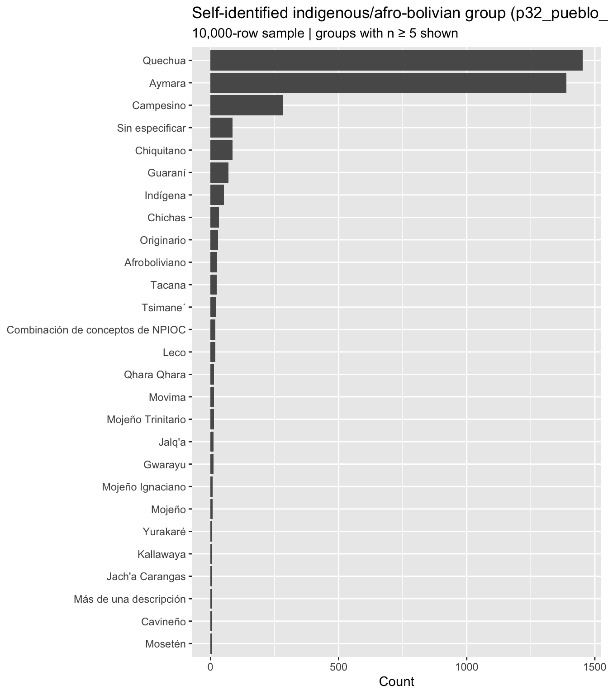
Comparing p32_pueblo_cod (raw) vs p32_pueblos (derived)
p32_pueblo_cod records exactly what the respondent said (145 raw categories); p32_pueblos is a CTAI-reconciled version (58 categories) that:
- Consolidates subgroups into broader groups (e.g. Bésiro → Chiquitano, Trinitario → Mojeño Trinitario)
- Folds generic terms (Campesino, Indígena, Originario, etc.) into “Otras declaraciones”
p32_compare <- persona_sample |>
select(p32_pueblo_per, p32_pueblo_cod, p32_pueblos) |>
mutate(
per_label = recode(as.character(p32_pueblo_per), !!!per_labels, .default = NA_character_),
cod_label = pueblo_cats$label[match(p32_pueblo_cod, pueblo_cats$code)],
pueblos_label = pueblos_cats$label[match(p32_pueblos, pueblos_cats$code)]
)
# Among "Sí" respondents: rows where cod and pueblos differ
p32_compare |>
filter(p32_pueblo_per == 1) |>
count(cod_label, pueblos_label, sort = TRUE) |>
filter(cod_label != pueblos_label) |>
rename(`p32_pueblo_cod` = cod_label, `p32_pueblos` = pueblos_label)# A tibble: 17 × 3
p32_pueblo_cod p32_pueblos n
<chr> <chr> <int>
1 Campesino Otras declaraciones 281
2 Sin especificar Otras declaraciones 86
3 Indígena Otras declaraciones 52
4 Originario Otras declaraciones 29
5 Combinación de conceptos de NPIOC Otras declaraciones 19
6 Qhara Qhara Charka Qhara Qhara 13
7 Interculturales y otras organizaciones indígenas Otras declaraciones 3
8 Pueblo Otras declaraciones 3
9 Coroma Quechua - Aymara 2
10 Trinitario Mojeño Trinitario 2
11 Uchupiamonas Tacana 2
12 Ayllu Porco Charka Qhara Qhara 1
13 Bésiro Chiquitano 1
14 Charka Charka Qhara Qhara 1
15 Huari Uru-Chipaya 1
16 Jatun Killacas Killacas 1
17 Jesús de Machaca Pakajaqi 1p32_compare |>
filter(p32_pueblo_per == 1) |>
mutate(
outcome = case_when(
cod_label == pueblos_label ~ "Exact match",
pueblos_label == "Otras declaraciones" ~ "Generic term → Otras declaraciones",
!is.na(cod_label) & cod_label != pueblos_label ~ "Subgroup consolidated"
)
) |>
count(outcome) |>
mutate(pct = round(100 * n / sum(n), 1)) |>
arrange(desc(n))# A tibble: 3 × 3
outcome n pct
<chr> <int> <dbl>
1 Exact match 3257 86.7
2 Generic term → Otras declaraciones 473 12.6
3 Subgroup consolidated 25 0.7Among the 3,755 self-identifiers in the sample:
- 86.7% have identical codes in both variables
- 12.6% used a generic term (Campesino, Indígena, etc.) in
p32_pueblo_cod, reclassified to “Otras declaraciones” inp32_pueblos - 0.7% named a subgroup that was merged into a broader group in
p32_pueblos
For most analyses, p32_pueblos is preferable as it uses the official CTAI reconciliation. Use p32_pueblo_cod if you need the finer-grained raw categories or want to study the generic-term responses separately.
Language and identity alignment (idioma_mat × p32_pueblos)
idioma_mat records the mother tongue (first language learned at home); 83 categories covering Bolivian indigenous languages, foreign languages, and special codes (998 = No habla, 994 = Lenguaje de señas). The dominant categories in the sample are Castellano (74.4%), Quechua (12.5%), and Aymara (7.3%).
# Key idioma_mat category labels (from variable dictionary Excel)
idioma_cats <- tribble(
~code, ~label,
1, "Araona", 2, "Aymara", 3, "Baure",
4, "Bésiro", 5, "Canichana", 6, "Castellano",
7, "Kabineña", 8, "Cayubaba", 9, "Chácobo",
10, "Tsimane´", 11, "Ese Ejja", 12, "Guaraní",
13, "Guarasu´we", 14, "Gwarayu", 15, "Itonama",
16, "Leco", 17, "Kallawaya", 18, "Machineri",
19, "Maropa", 20, "Mojeño Ignaciano", 21, "Mojeño Trinitario",
22, "Moré", 23, "Mosetén", 24, "Movima",
25, "Pacahuara", 26, "Puquina", 27, "Quechua",
28, "Sirionó", 29, "Tacana", 30, "Tapiete",
32, "Uru-Chipaya", 33, "Weenhayek", 34, "Yaminawa",
35, "Yuqui", 36, "Yurakaré", 37, "Zamuco",
94, "Afroboliviano", 991, "Otras declaraciones", 992, "Otro idioma extranjero",
994, "Lenguaje de señas", 998, "No habla"
)persona_sample |>
count(idioma_mat, sort = TRUE) |>
left_join(idioma_cats, by = c("idioma_mat" = "code")) |>
mutate(
label = coalesce(label, if_else(is.na(idioma_mat), "(NA / not asked)", paste0("Code ", idioma_mat))),
pct = round(100 * n / nrow(persona_sample), 1)
) |>
select(code = idioma_mat, label, n, pct)# A tibble: 26 × 4
code label n pct
<dbl> <chr> <int> <dbl>
1 6 Castellano 7442 74.4
2 27 Quechua 1252 12.5
3 2 Aymara 726 7.3
4 998 No habla 233 2.3
5 NA (NA / not asked) 165 1.6
6 41 Code 41 71 0.7
7 12 Guaraní 30 0.3
8 58 Code 58 22 0.2
9 10 Tsimane´ 20 0.2
10 14 Gwarayu 5 0
# ℹ 16 more rowsAlignment: does language match identity?
For each indigenous-language speaker, p32_pueblos responses are classified as:
- Matching group — identity name corresponds to the language (e.g. Quechua speaker → Quechua identity)
- Different group — identifies with a named but different group
- Generic identity — said “Sí” but used a generic term (→ “Otras declaraciones” in
p32_pueblos) - Does not identify —
p32_pueblos == "No se autoidentifica"
Two apparent mismatches are actually coherent: Kabineña speakers identify as Cavineño (same group, different spelling conventions), and Zamuco speakers identify as Ayoreo (Zamuco is the language name; Ayoreo is the ethnonym used in identity contexts).
indigenous_langs <- c(
"Quechua", "Aymara", "Guaraní", "Tsimane´", "Gwarayu", "Weenhayek",
"Mojeño Trinitario", "Kabineña", "Chácobo", "Tacana", "Zamuco",
"Ese Ejja", "Mojeño Ignaciano", "Uru-Chipaya", "Yurakaré", "Bésiro",
"Mosetén", "Weenhayek"
)
# Note: Afroboliviano is excluded from linguistic analysis. The census records
# "Afroboliviano" as a language code (code 94), but this is generally understood
# to be a Spanish variety rather than a distinct language. The ~450 reported speakers
# are treated here as a data artefact rather than a separate language group.
# indigenous_langs_core <- c(
# "Quechua", "Aymara", "Guaraní", "Tsimane´", "Gwarayu", "Weenhayek",
# "Mojeño Trinitario", "Kabineña", "Chácobo", "Tacana", "Zamuco",
# "Ese Ejja", "Mojeño Ignaciano", "Uru-Chipaya", "Yurakaré", "Afroboliviano"
# )
cross <- persona_sample |>
mutate(
idioma_label = idioma_cats$label[match(idioma_mat, idioma_cats$code)],
pueblos_label = pueblos_cats$label[match(p32_pueblos, pueblos_cats$code)]
)
classify_alignment <- function(idioma, pueblos) {
case_when(
pueblos == "No se autoidentifica" ~ "Does not identify",
pueblos == "Sin respuesta" ~ "No response",
pueblos == "Otras declaraciones" ~ "Generic identity",
str_detect(pueblos, fixed(idioma, ignore_case = TRUE)) |
str_detect(idioma, fixed(pueblos, ignore_case = TRUE)) ~ "Matching group",
!is.na(pueblos) ~ "Different group",
TRUE ~ "No identity data"
)
}cross |>
filter(idioma_label %in% indigenous_langs) |>
mutate(outcome = classify_alignment(idioma_label, pueblos_label)) |>
count(idioma_label, outcome) |>
group_by(idioma_label) |>
mutate(total = sum(n), pct = round(100 * n / total, 0)) |>
ungroup() |>
select(idioma_label, outcome, pct) |>
pivot_wider(names_from = outcome, values_from = pct, values_fill = 0) |>
arrange(desc(`Matching group`))# A tibble: 15 × 6
idioma_label `Different group` `Does not identify` `Generic identity`
<chr> <dbl> <dbl> <dbl>
1 Chácobo 0 0 0
2 Ese Ejja 0 0 0
3 Mojeño Ignaciano 0 0 0
4 Tacana 0 0 0
5 Uru-Chipaya 0 0 0
6 Weenhayek 0 0 0
7 Yurakaré 0 0 0
8 Tsimane´ 0 0 5
9 Guaraní 0 7 3
10 Gwarayu 0 0 20
11 Aymara 3 12 9
12 Mojeño Trinitario 0 33 0
13 Quechua 4 20 9
14 Kabineña 100 0 0
15 Zamuco 100 0 0
# ℹ 2 more variables: `Matching group` <dbl>, `No response` <dbl>cross |>
filter(idioma_label %in% indigenous_langs) |>
mutate(
outcome = classify_alignment(idioma_label, pueblos_label),
outcome = factor(outcome, levels = c(
"Matching group", "Different group", "Generic identity",
"Does not identify", "No response", "No identity data"
))
) |>
count(idioma_label, outcome) |>
group_by(idioma_label) |>
mutate(pct = n / sum(n)) |>
ungroup() |>
mutate(idioma_label = fct_reorder(idioma_label, pct * (outcome == "Matching group"), sum)) |>
ggplot(aes(x = pct, y = idioma_label, fill = outcome)) +
geom_col() +
scale_x_continuous(labels = scales::percent_format()) +
scale_fill_manual(values = c(
"Matching group" = "#2166ac",
"Different group" = "#74add1",
"Generic identity" = "#fee090",
"Does not identify" = "#d73027",
"No response" = "#bababa",
"No identity data" = "#f5f5f5"
)) +
labs(
title = "Alignment between mother tongue and indigenous identity",
subtitle = "idioma_mat vs p32_pueblos | 10,000-row sample",
x = "Share of speakers", y = NULL, fill = NULL
) +
theme(legend.position = "bottom")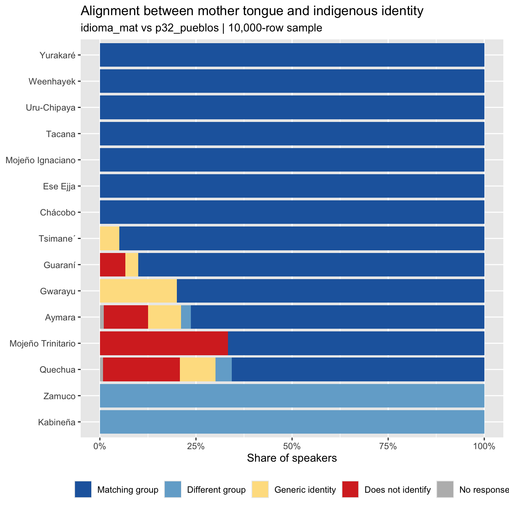
Castellano speakers who self-identify as indigenous
A meaningful share of Spanish mother-tongue speakers still self-identify with an indigenous group, reflecting language shift without loss of ethnic identity.
cross |>
filter(
idioma_label == "Castellano",
!pueblos_label %in% c("No se autoidentifica", "Sin respuesta"),
!is.na(pueblos_label)
) |>
count(pueblos_label, sort = TRUE) |>
mutate(
pct_of_castellano_speakers = round(
100 * n / sum(cross$idioma_label == "Castellano", na.rm = TRUE), 1
)
) |>
rename(identity = pueblos_label)# A tibble: 36 × 3
identity n pct_of_castellano_speakers
<chr> <int> <dbl>
1 Aymara 803 10.8
2 Quechua 592 8
3 Otras declaraciones 269 3.6
4 Chiquitano 86 1.2
5 Guaraní 40 0.5
6 Tacana 24 0.3
7 Chichas 23 0.3
8 Afroboliviano 20 0.3
9 Leco 15 0.2
10 Mojeño Trinitario 14 0.2
# ℹ 26 more rowsAmong Castellano speakers: ~19% (≈1,400 of the 7,400 in the sample) still self-identify as indigenous. Aymara and Quechua lead, but Chiquitano, Guaraní, Tacana, and Afroboliviano are also notable — groups from lowland regions where Spanish may have displaced indigenous languages more thoroughly.
Full-census language–identity alignment: proportions and counts
The sample results above are based on 10,000 rows, leaving small groups with very few observations. The full 11.4M-person dataset is queried lazily via arrow — only the grouped counts are collected.
full_cross <- ds |>
group_by(idioma_mat, p32_pueblos) |>
summarise(n = n(), .groups = "drop") |>
collect()full_cross_decoded <- full_cross |>
mutate(
idioma_label = idioma_cats$label[match(idioma_mat, idioma_cats$code)],
pueblos_label = pueblos_cats$label[match(p32_pueblos, pueblos_cats$code)]
)
# Kabineña→Cavineño and Zamuco→Ayoreo are naming convention differences (same group),
# so they are treated as matching in the classifier.
classify_alignment2 <- function(idioma, pueblos) {
equiv <- c("Kabineña" = "Cavineño", "Zamuco" = "Ayoreo", "Bésiro" = "Chiquitano")
expected <- coalesce(equiv[idioma], idioma)
case_when(
str_detect(pueblos, fixed(expected, ignore_case = TRUE)) |
str_detect(expected, fixed(pueblos, ignore_case = TRUE)) ~ "Matching group",
pueblos == "No se autoidentifica" ~ "Does not identify",
pueblos == "Sin respuesta" ~ "No response",
pueblos == "Otras declaraciones" ~ "Generic identity",
!is.na(pueblos) ~ "Different group",
TRUE ~ "No identity data"
)
}
langs_with_castellano <- c(indigenous_langs, "Castellano")
alignment_full <- full_cross_decoded |>
filter(!is.na(idioma_label), idioma_label %in% langs_with_castellano) |>
mutate(outcome = classify_alignment2(idioma_label, pueblos_label)) |>
group_by(idioma_label, outcome) |>
summarise(n = sum(n), .groups = "drop") |>
group_by(idioma_label) |>
mutate(total = sum(n), pct = round(100 * n / total, 1)) |>
ungroup()
# Alias used in the count-plot chunks below
alignment_full2 <- alignment_full
alignment_full |>
select(idioma_label, outcome, pct, total) |>
pivot_wider(names_from = outcome, values_from = pct, values_fill = 0) |>
arrange(desc(total))# A tibble: 18 × 7
idioma_label total `Different group` `Does not identify` `Generic identity`
<chr> <int> <dbl> <dbl> <dbl>
1 Castellano 8.51e6 23.3 71.7 3.7
2 Quechua 1.42e6 4 19.9 9.1
3 Aymara 7.82e5 2.6 10.3 9.9
4 Guaraní 4.60e4 1.2 8.5 4.8
5 Tsimane´ 1.88e4 0.6 0.9 2.9
6 Gwarayu 7.93e3 1 6.4 6.1
7 Weenhayek 5.00e3 0.1 1.2 3.4
8 Uru-Chipaya 1.98e3 0.2 2.9 2.3
9 Mojeño Trini… 1.86e3 3.8 9.8 8.4
10 Zamuco 1.77e3 0.8 7.5 7.8
11 Bésiro 1.76e3 4 7.2 6.2
12 Ese Ejja 1.46e3 0.2 2.7 2.2
13 Chácobo 1.30e3 0.2 0.2 6.4
14 Mosetén 1.13e3 1.9 1.7 4.6
15 Yurakaré 9.26e2 5.2 4 8.4
16 Kabineña 8.93e2 1.2 1.9 2.2
17 Mojeño Ignac… 3.57e2 2.8 9 5
18 Tacana 3.57e2 1.4 9 5
# ℹ 2 more variables: `Matching group` <dbl>, `No response` <dbl>Key findings from the full census:
- Kabineña (893 speakers, 94% matching) and Zamuco (1,771 speakers, 83% matching) are naming convention differences: Kabineña = Cavineño and Zamuco = Ayoreo in the CTAI list.
- Afroboliviano (451 speakers): 99.8% matching — the tightest alignment of any group.
- Tsimane´ (18,848 speakers): 95% matching, the highest rate among groups of meaningful size.
- Quechua (1.42M speakers): 66% match, 20% don’t identify — widespread language retention without ethnic self-identification.
- Castellano (8.5M speakers): 23% (≈1.98M people) self-identify as indigenous despite Spanish being their mother tongue, representing language shift without loss of identity.
- Kabineña (893 speakers, 94% matching) and Zamuco (1,771 speakers, 83% matching) are naming convention differences: Kabineña = Cavineño and Zamuco = Ayoreo in the CTAI list.
- Tsimane´ (18,848 speakers): 95% matching, the highest rate among groups of meaningful size.
Sub-ethnic identities among Quechua speakers
Among Quechua speakers who identify with a different named group (~57,000 people), the top categories are Andean pre-colonial ayllus and confederacies — groups whose members speak Quechua but resist the pan-ethnic label:
quechua_total <- alignment_full |>
filter(idioma_label == "Quechua") |>
pull(total) |>
first()
full_cross_decoded |>
filter(
idioma_label == "Quechua",
!pueblos_label %in% c("No se autoidentifica", "Sin respuesta",
"Otras declaraciones", "Quechua"),
!is.na(pueblos_label)
) |>
group_by(pueblos_label) |>
summarise(n = sum(n), .groups = "drop") |>
mutate(pct_of_quechua_speakers = round(100 * n / quechua_total, 2)) |>
arrange(desc(n)) |>
head(15)# A tibble: 15 × 3
pueblos_label n pct_of_quechua_speakers
<chr> <int> <dbl>
1 Charka Qhara Qhara 12425 0.88
2 Kallawaya 9637 0.68
3 Aymara 7131 0.5
4 Chichas 5852 0.41
5 Jalq'a 5149 0.36
6 Yampara 3225 0.23
7 Leco 2280 0.16
8 Raqaypampa 2180 0.15
9 Jach'a Carangas 1710 0.12
10 Afroboliviano 1609 0.11
11 Quechua - Aymara 1476 0.1
12 Lípez 1066 0.08
13 Killacas 731 0.05
14 Pakajaqi 705 0.05
15 Más de una descripción 522 0.04Full-census alignment plots
outcome_levels <- c(
"Matching group", "Identifies as indigenous", "Different group",
"Generic identity", "Does not identify", "No response", "No identity data"
)
outcome_colors <- c(
"Matching group" = "#b35806",
"Identifies as indigenous" = "#e08214",
"Different group" = "#fdb863",
"Generic identity" = "#fee0b6",
"Does not identify" = "#4a5568",
"No response" = "#bababa",
"No identity data" = "#f5f5f5"
)
# Build a shared ordered plot data frame
make_plot_df <- function(outcome_map) {
alignment_full |>
mutate(
outcome_plot = outcome_map[outcome],
outcome_plot = if_else(
idioma_label == "Castellano" & outcome == "Different group",
outcome_map[["Identifies as indigenous"]],
outcome_plot
),
is_castellano = idioma_label == "Castellano",
match_pct = if_else(outcome == "Matching group", pct, 0)
) |>
group_by(idioma_label) |>
mutate(sort_val = sum(match_pct)) |>
ungroup() |>
mutate(
idioma_label = fct_reorder(idioma_label, if_else(is_castellano, -Inf, sort_val))
)
}
label_data <- alignment_full |>
group_by(idioma_label) |>
summarise(total = first(total), .groups = "drop") |>
mutate(
is_castellano = idioma_label == "Castellano",
idioma_label = fct_reorder(idioma_label, if_else(is_castellano, -Inf, 0))
)
make_bar_plot <- function(df, lvls, cols, title, subtitle, x_label) {
df |>
mutate(outcome_plot = factor(outcome_plot, levels = lvls)) |>
ggplot(aes(x = pct / 100, y = idioma_label, fill = outcome_plot)) +
geom_col() +
geom_text(
data = label_data,
aes(x = 1.02, y = idioma_label, label = scales::comma(total)),
inherit.aes = FALSE, hjust = 0, size = 2.8
) +
scale_x_continuous(
labels = scales::percent_format(),
expand = expansion(mult = c(0, 0.15))
) +
scale_fill_manual(values = cols, drop = FALSE) +
labs(title = title, subtitle = subtitle, x = x_label, y = NULL, fill = NULL) +
theme_minimal(base_size = 11) +
theme(legend.position = "bottom")
}English
en_map <- c(
"Matching group" = "Matching group",
"Different group" = "Different group",
"Identifies as indigenous" = "Identifies as indigenous",
"Generic identity" = "Generic identity",
"Does not identify" = "Does not identify",
"No response" = "No response",
"No identity data" = "No identity data"
)
make_bar_plot(
make_plot_df(en_map),
lvls = outcome_levels,
cols = outcome_colors,
title = "Alignment between mother tongue and indigenous identity — full census",
subtitle = "idioma_mat vs p32_pueblos | n = 11,365,333 | numbers show total speakers",
x_label = "Share of speakers"
)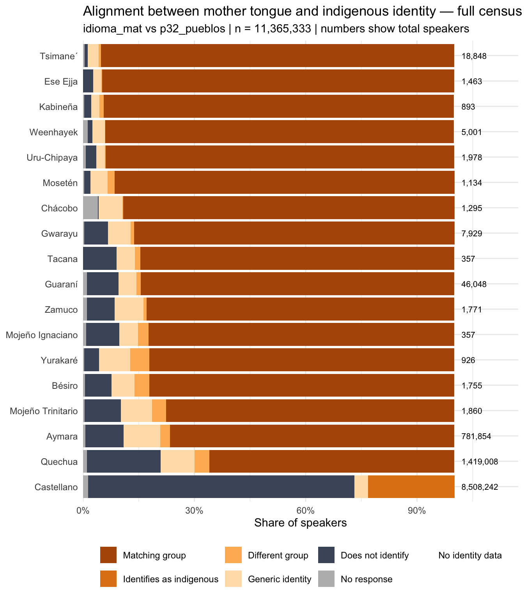
Spanish / Español
outcome_levels_es <- c(
"Grupo coincidente", "Se autoidentifica como indígena", "Grupo diferente",
"Identidad genérica", "No se autoidentifica", "Sin respuesta", "Sin datos de identidad"
)
outcome_colors_es <- c(
"Grupo coincidente" = "#b35806",
"Se autoidentifica como indígena" = "#e08214",
"Grupo diferente" = "#fdb863",
"Identidad genérica" = "#fee0b6",
"No se autoidentifica" = "#4a5568",
"Sin respuesta" = "#bababa",
"Sin datos de identidad" = "#f5f5f5"
)
es_map <- c(
"Matching group" = "Grupo coincidente",
"Different group" = "Grupo diferente",
"Identifies as indigenous" = "Se autoidentifica como indígena",
"Generic identity" = "Identidad genérica",
"Does not identify" = "No se autoidentifica",
"No response" = "Sin respuesta",
"No identity data" = "Sin datos de identidad"
)
make_bar_plot(
make_plot_df(es_map),
lvls = outcome_levels_es,
cols = outcome_colors_es,
title = "Alineación entre lengua materna e identidad indígena — censo completo",
subtitle = "idioma_mat vs p32_pueblos | n = 11.365.333 | números: total de hablantes",
x_label = "Proporción de hablantes"
)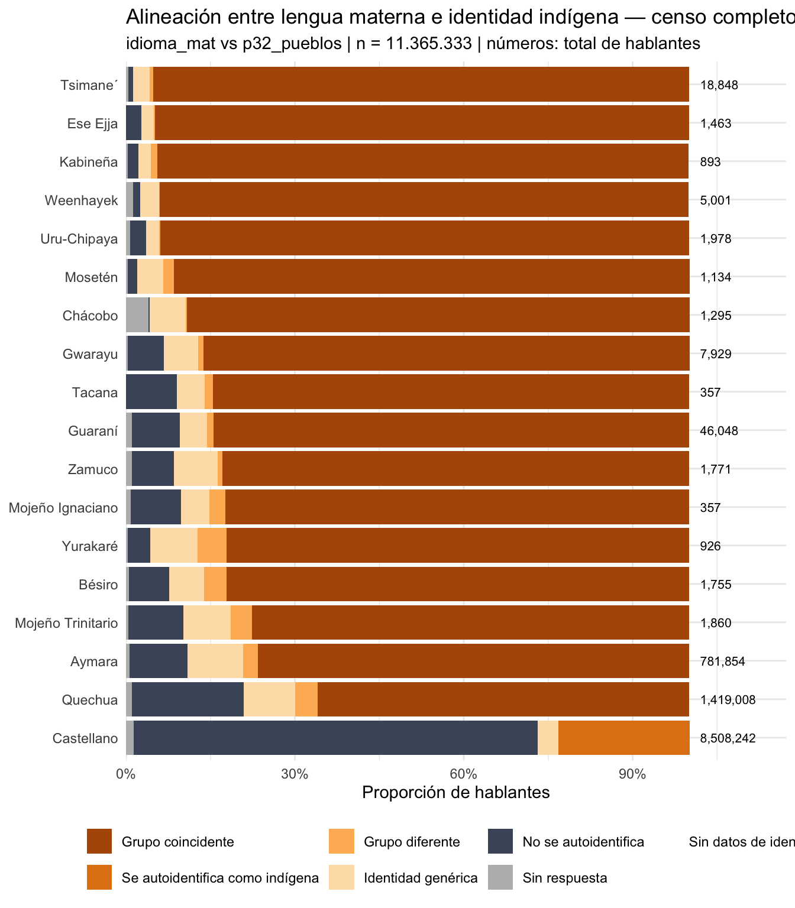
Full-census language–identity alignment: counts (aggregated)
The same data as above, displayed as population counts rather than percentages, with all languages except Quechua, Aymara, Guaraní, and Castellano collapsed into “Other indigenous language” / “Otro idioma nativo”.
library(ggrepel)
keep_langs <- c("Guaraní", "Aymara", "Quechua", "Castellano")
lang_order <- c("Castellano", "Other indigenous language", "Guaraní", "Aymara", "Quechua")
lang_order_es <- c("Castellano", "Otro idioma nativo", "Guaraní", "Aymara", "Quechua")
# Categories by side
right_cats <- c("Matching group", "Identifies as indigenous", "Different group",
"Generic identity")
left_cats <- c("Does not identify", "No response")
count_df <- alignment_full2 |>
mutate(idioma_grp = if_else(idioma_label %in% keep_langs, idioma_label,
"Other indigenous language")) |>
group_by(idioma_grp, outcome) |>
summarise(n = sum(n), .groups = "drop") |>
group_by(idioma_grp) |>
mutate(total = sum(n)) |>
ungroup()
make_count_diverging_df <- function(outcome_map, other_lbl, lang_lvls) {
count_df |>
mutate(
outcome_plot = outcome_map[outcome],
# Castellano has no "Matching group"; remap "Different group" → identifies
outcome_plot = if_else(
idioma_grp == "Castellano" & outcome == "Different group",
outcome_map[["Identifies as indigenous"]],
outcome_plot
),
idioma_grp = if_else(idioma_grp == "Other indigenous language",
other_lbl, idioma_grp)
) |>
# Collapse duplicates from Castellano remapping
group_by(idioma_grp, outcome_plot, total) |>
summarise(n = sum(n), .groups = "drop") |>
mutate(
side = if_else(outcome_plot %in% outcome_map[left_cats], "left", "right"),
n_plot = if_else(side == "left", -n, n),
idioma_grp = factor(idioma_grp, levels = lang_lvls)
)
}
label_compact <- function(x) {
case_when(
abs(x) >= 1e6 ~ paste0(round(abs(x) / 1e6, 1), "M"),
abs(x) >= 1e3 ~ paste0(round(abs(x) / 1e3, 1), "K"),
TRUE ~ as.character(abs(x))
)
}
make_count_diverging <- function(df, lvls_right, lvls_left, cols, title,
subtitle, x_label, arrow_left, arrow_right,
base_size = 11) {
# Font sizes scale with base_size
seg_label_size <- base_size * 0.23
total_label_size <- base_size * 0.27
# Factor order: right categories (inner → outer), then left (inner → outer)
df <- df |>
mutate(outcome_plot = factor(outcome_plot, levels = c(lvls_right, lvls_left)))
# Compute label positions (desc: ggplot2 stacks last level closest to axis)
seg_labs <- df |>
arrange(idioma_grp, side, desc(outcome_plot)) |>
group_by(idioma_grp, side) |>
mutate(
abs_cum = cumsum(n),
abs_start = abs_cum - n,
mid = if_else(side == "left",
-(abs_start + abs_cum) / 2,
(abs_start + abs_cum) / 2)
) |>
ungroup() |>
# Label segments > 20k, > 3% of total, and < 85% (dominant segments are obvious)
filter(n > 20000, n / total > 0.03, n / total < 0.85) |>
mutate(label = label_compact(n))
# Right-side total (identifies) for end-of-bar labels
right_totals <- df |>
filter(side == "right") |>
group_by(idioma_grp) |>
summarise(right_total = sum(n), .groups = "drop")
# Y-axis labels: language name + total on a second line
y_labels <- df |>
group_by(idioma_grp) |>
summarise(total = first(total), .groups = "drop") |>
mutate(y_lab = paste0(idioma_grp, "\nn = ", scales::comma(total))) |>
pull(y_lab, name = idioma_grp)
df <- df |>
mutate(idioma_grp = factor(y_labels[as.character(idioma_grp)],
levels = y_labels))
right_totals <- right_totals |>
mutate(idioma_grp = factor(y_labels[as.character(idioma_grp)],
levels = y_labels))
seg_labs <- seg_labs |>
mutate(idioma_grp = factor(y_labels[as.character(idioma_grp)],
levels = y_labels))
ggplot(df, aes(x = n_plot, y = idioma_grp, fill = outcome_plot)) +
geom_col(width = 0.7) +
geom_text_repel(
data = seg_labs,
aes(x = mid, y = idioma_grp, label = label),
inherit.aes = FALSE, size = seg_label_size, fontface = "bold",
direction = "x", nudge_y = 0.48,
segment.size = 0.25, segment.color = "grey50",
min.segment.length = 0,
box.padding = 0.2, force = 3, max.overlaps = 20
) +
geom_text(
data = right_totals,
aes(x = right_total * 1.02, y = idioma_grp,
label = scales::comma(right_total)),
inherit.aes = FALSE, hjust = 0, size = total_label_size, fontface = "bold"
) +
geom_vline(xintercept = 0, linewidth = 0.4) +
scale_x_continuous(
labels = function(x) scales::comma(abs(x)),
expand = expansion(mult = c(0.10, 0.15))
) +
scale_fill_manual(
values = cols,
breaks = c(rev(lvls_right), lvls_left),
drop = FALSE
) +
labs(
title = title,
subtitle = paste0(subtitle, "\n\u2190 ", arrow_left,
" ", arrow_right, " \u2192"),
x = x_label, y = NULL, fill = NULL
) +
theme_minimal(base_size = base_size) +
theme(
legend.position = "bottom",
panel.grid.major.y = element_blank()
)
}English (counts)
make_count_diverging(
make_count_diverging_df(en_map, "Other indigenous language", lang_order),
lvls_right = c("Generic identity", "Different group",
"Identifies as indigenous", "Matching group"),
lvls_left = c("No response", "Does not identify"),
cols = outcome_colors,
title = "Mother tongue and indigenous identity — CNPV 2024 (counts)",
subtitle = "idioma_mat vs p32_pueblos | n = 11,365,333",
x_label = "Number of persons",
arrow_left = "Does not identify / No response",
arrow_right = "Identifies as indigenous"
)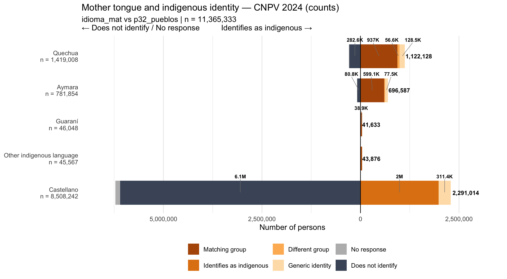
Spanish / Español (conteos)
make_count_diverging(
make_count_diverging_df(es_map, "Otro idioma nativo", lang_order_es),
lvls_right = c("Identidad genérica", "Grupo diferente",
"Se autoidentifica como indígena", "Grupo coincidente"),
lvls_left = c("Sin respuesta", "No se autoidentifica"),
cols = outcome_colors_es,
title = "Lengua materna e identidad indígena — CNPV 2024 (conteos)",
subtitle = "idioma_mat vs p32_pueblos | n = 11.365.333",
x_label = "Número de personas",
arrow_left = "No se autoidentifica / Sin respuesta",
arrow_right = "Se autoidentifica como indígena"
)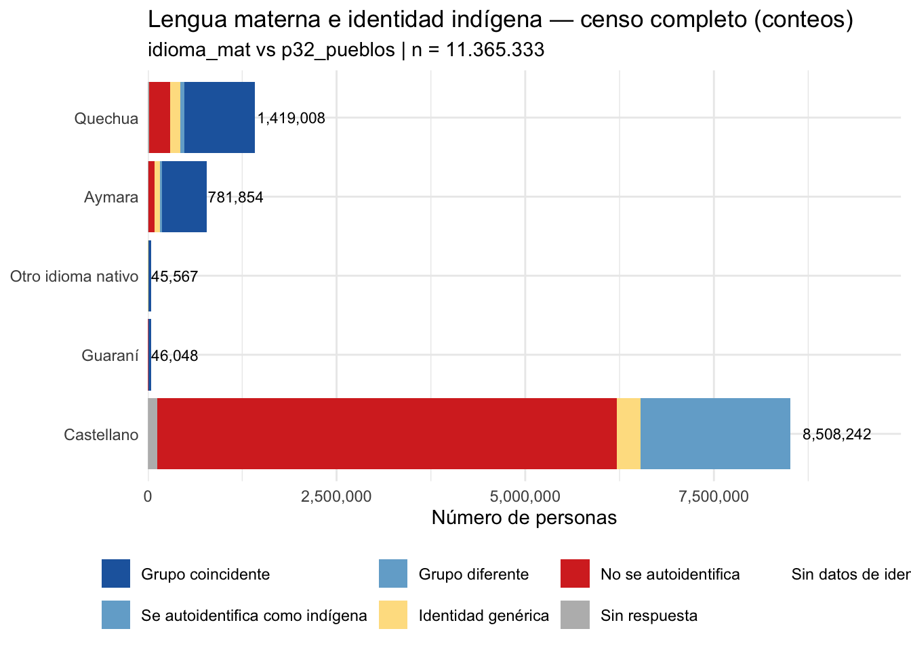
Editorial version (English)
div_df <- make_count_diverging_df(en_map, "Other indigenous language", lang_order) |>
mutate(outcome_plot = factor(outcome_plot, levels = c(
"Generic identity", "Different group", "Identifies as indigenous", "Matching group",
"No response", "Does not identify"
)))
x_range_div <- max(abs(div_df$n_plot))
# Segment labels — 5% threshold keeps it clean
seg_labs_ed <- div_df |>
arrange(idioma_grp, side, desc(outcome_plot)) |>
group_by(idioma_grp, side) |>
mutate(
abs_cum = cumsum(n),
abs_start = abs_cum - n,
mid = if_else(side == "left",
-(abs_start + abs_cum) / 2,
(abs_start + abs_cum) / 2)
) |>
ungroup() |>
filter(n > 20000, n / total > 0.05, n / total < 0.85) |>
mutate(
label = label_compact(n),
text_col = if_else(
outcome_plot %in% c("Matching group", "Does not identify",
"Identifies as indigenous"),
"white", "grey20"
)
)
seg_inside <- seg_labs_ed |> filter(n > x_range_div * 0.05)
seg_above <- seg_labs_ed |> filter(n <= x_range_div * 0.05)
right_totals_ed <- div_df |>
filter(side == "right") |>
group_by(idioma_grp) |>
summarise(right_total = sum(n), .groups = "drop")
# Y-axis labels: bold name + non-bold total on second line
y_labs_ed <- div_df |>
group_by(idioma_grp) |>
summarise(total = first(total), .groups = "drop") |>
mutate(y_lab = paste0(idioma_grp, "\nn = ", scales::comma(total))) |>
pull(y_lab, name = idioma_grp)
# Remap factor levels for all data frames
div_df <- div_df |>
mutate(idioma_grp = factor(y_labs_ed[as.character(idioma_grp)],
levels = y_labs_ed))
seg_inside <- seg_inside |>
mutate(idioma_grp = factor(y_labs_ed[as.character(idioma_grp)],
levels = y_labs_ed))
seg_above <- seg_above |>
mutate(idioma_grp = factor(y_labs_ed[as.character(idioma_grp)],
levels = y_labs_ed))
right_totals_ed <- right_totals_ed |>
mutate(idioma_grp = factor(y_labs_ed[as.character(idioma_grp)],
levels = y_labs_ed))
bs <- 14
ggplot(div_df, aes(x = n_plot, y = idioma_grp, fill = outcome_plot)) +
geom_col(width = 0.65, show.legend = FALSE) +
geom_text(
data = seg_inside,
aes(x = mid, y = idioma_grp, label = label, color = text_col),
inherit.aes = FALSE, size = bs * 0.26, fontface = "bold"
) +
scale_color_identity() +
geom_text_repel(
data = seg_above,
aes(x = mid, y = idioma_grp, label = label),
inherit.aes = FALSE, size = bs * 0.21, fontface = "bold",
color = "grey30",
direction = "x", nudge_y = 0.44,
segment.size = 0.2, segment.color = "grey60",
min.segment.length = 0,
box.padding = 0.15, force = 3, max.overlaps = 20
) +
geom_text(
data = right_totals_ed,
aes(x = right_total * 1.02, y = idioma_grp,
label = scales::comma(right_total)),
inherit.aes = FALSE, hjust = 0, size = bs * 0.26, fontface = "bold",
color = "grey30"
) +
geom_vline(xintercept = 0, linewidth = 1.2, color = "grey20") +
annotate("text", x = -2500000, y = 5.7,
label = "\u2190 Does not identify / No response",
size = bs * 0.26, fontface = "bold", color = "#4a5568", hjust = 0.5) +
annotate("text", x = 1500000, y = 5.7,
label = "Identifies as indigenous \u2192",
size = bs * 0.26, fontface = "bold", color = "#b35806", hjust = 0.5) +
scale_x_continuous(
labels = function(x) scales::comma(abs(x)),
expand = expansion(mult = c(0.08, 0.14))
) +
scale_fill_manual(values = outcome_colors) +
coord_cartesian(clip = "off", ylim = c(0.4, 5.5)) +
labs(
title = "Mother tongue and indigenous identity \u2014 CNPV 2024",
subtitle = "idioma_mat vs p32_pueblos | n = 11,365,333",
x = NULL, y = NULL
) +
theme_void(base_size = bs) +
theme(
plot.title = element_text(face = "bold", size = rel(1.35), margin = margin(b = 3)),
plot.subtitle = element_text(color = "grey40", size = rel(0.8), margin = margin(b = 16)),
plot.margin = margin(20, 30, 10, 10),
axis.text.y = element_text(hjust = 1, color = "grey20",
size = rel(0.85), margin = margin(r = 8)),
axis.text.x = element_text(color = "grey50", size = rel(0.6), margin = margin(t = 5))
)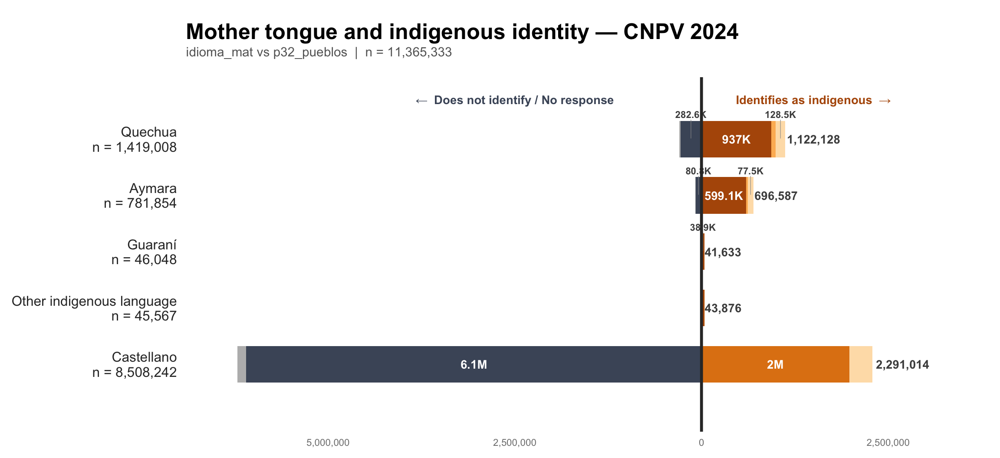
CEL distribution: 2001 vs. 2024
The Condición Étnico-Lingüística (CEL) scale captures the intensity of indigenous identity and language use, combining Xavier Albó’s conceptual framework: self-identification (Q1), language match (Q2), childhood language acquisition (Q3), and Spanish fluency (C). The 2024 census data allows direct comparison with Albó’s own 2001 analysis from the 1992 census baseline.
source("cel_helpers.R")cel_helpers.R loaded: compute_cel(), read_census_geo(), lookup tables, cel_colors.# albo_vars <- readRDS("../bolivia-data/albo_vars.rds")
molina_albo_8_1_en <- readRDS("data/molina_albo_8_1_en.rds")
cel_2001 <- molina_albo_8_1_en |>
transmute(cel = as.numeric(cel), pct = pop_total / sum(pop_total)) |>
mutate(year = "2001")
cel_2024 <- albo_vars |>
mutate(cel = floor(cel)) |>
count(cel) |>
mutate(pct = n / sum(n), year = "2024") |>
select(cel, pct, year)
cel_labels_int <- c(
"0" = "0 — No identity,\nno language",
"1" = "1 — No identity,\nspeaks (no childhood)",
"2" = "2 — No identity,\nspeaks + childhood\n(bilingual)",
"3" = "3 — No identity,\nspeaks + childhood\n(monolingual)",
"4" = "4 — Identity only",
"5" = "5 — Identity +\nlanguage (no childhood)",
"6" = "6 — Identity +\nlanguage + childhood\n(bilingual)",
"7" = "7 — Identity +\nlanguage + childhood\n(monolingual)"
)
# Collapse cel_colors for integer levels (0–7)
cel_colors_int <- cel_colors[c("0","1","2","3","4","5","6","7")]
plot_data <- bind_rows(cel_2001, cel_2024) |>
mutate(
cel_chr = as.character(cel),
cel_lbl = cel_labels_int[cel_chr],
cel_lbl = fct_reorder(cel_lbl, cel)
)
ggplot(plot_data, aes(x = pct, y = cel_lbl, fill = cel_chr)) +
geom_col() +
geom_text(
aes(label = paste0(round(pct * 100, 1), "%")),
hjust = -0.1, size = 3
) +
scale_x_continuous(labels = scales::percent_format(),
expand = expansion(mult = c(0, 0.18))) +
scale_fill_manual(values = cel_colors_int, guide = "none") +
facet_wrap(~ year, ncol = 2) +
labs(
title = "CEL distribution: 2001 vs. 2024",
subtitle = "2001: Molina Barrios & Albó (2006), Cuadro 8.1 (n = 7,640,023)\n2024: CPV 2024, all persons (n = 11,365,333). Half-steps collapsed to floor.",
x = "Share of population", y = NULL
) +
theme_minimal(base_size = 11)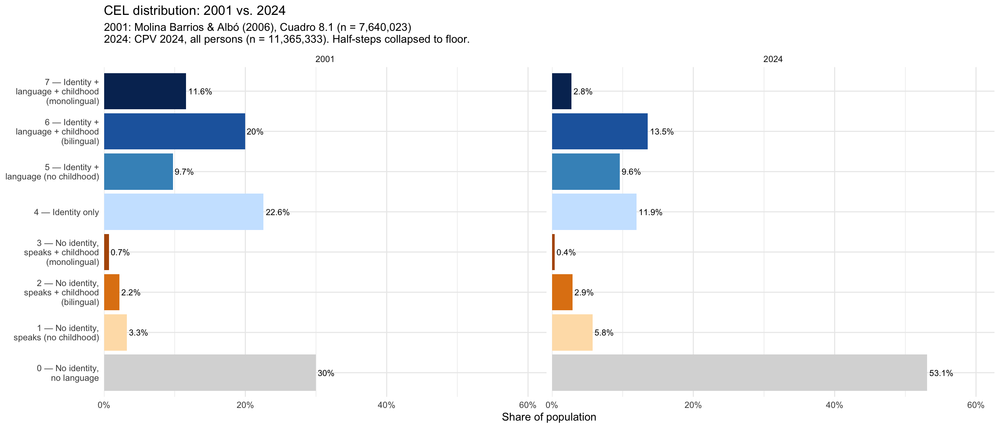
Age, language shift, and indigenous identity
A key question is whether younger generations are less likely to both speak an indigenous language and self-identify as indigenous. The full census allows us to examine this cleanly, again via lazy aggregation.
age_cross <- ds |>
filter(!is.na(p26_edad), !is.na(idioma_mat), !is.na(p32_pueblos)) |>
mutate(
age_group = case_when(
p26_edad < 15 ~ "0–14",
p26_edad < 30 ~ "15–29",
p26_edad < 45 ~ "30–44",
p26_edad < 60 ~ "45–59",
TRUE ~ "60+"
)
) |>
group_by(idioma_mat, p32_pueblos, age_group) |>
summarise(n = n(), .groups = "drop") |>
collect() |>
mutate(
idioma_label = idioma_cats$label[match(idioma_mat, idioma_cats$code)],
pueblos_label = pueblos_cats$label[match(p32_pueblos, pueblos_cats$code)],
age_group = factor(age_group, levels = c("0–14","15–29","30–44","45–59","60+"))
)Self-identification rate by age
The share of the population that self-identifies as indigenous declines markedly in younger cohorts, from 49% of 60+ year-olds to 28% of 0–14 year-olds.
total_by_age <- age_cross |>
group_by(age_group) |>
summarise(total_pop = sum(n), .groups = "drop")
identifies_by_age <- age_cross |>
filter(!pueblos_label %in% c("No se autoidentifica", "Sin respuesta"),
!is.na(pueblos_label)) |>
group_by(age_group) |>
summarise(n_identifies = sum(n), .groups = "drop")
total_by_age |>
left_join(identifies_by_age, by = "age_group") |>
mutate(pct_identifies = round(100 * n_identifies / total_pop, 1))# A tibble: 5 × 4
age_group total_pop n_identifies pct_identifies
<fct> <int> <int> <dbl>
1 0–14 2977560 840425 28.2
2 15–29 2999137 1093959 36.5
3 30–44 2444449 1017178 41.6
4 45–59 1550789 715318 46.1
5 60+ 1216556 589888 48.5Mother tongue of self-identifiers, by age
Among those who do self-identify, the proportion who also speak an indigenous mother tongue drops sharply with youth: from 76% in the 60+ cohort to just 22% in the 0–14 cohort. The inverse — self-identifying as indigenous while having Castellano as mother tongue — rises from 24% among elders to 72% among children.
indigenous_identifies <- age_cross |>
filter(!pueblos_label %in% c("No se autoidentifica", "Sin respuesta"),
!is.na(pueblos_label)) |>
mutate(
lang_group = case_when(
idioma_label == "Castellano" ~ "Castellano",
!is.na(idioma_label) & idioma_label != "No habla" ~ "Indigenous language",
TRUE ~ "Other/unknown"
)
) |>
group_by(age_group, lang_group) |>
summarise(n = sum(n), .groups = "drop") |>
group_by(age_group) |>
mutate(total = sum(n), pct = round(100 * n / total, 1)) |>
ungroup()
indigenous_identifies |>
filter(lang_group %in% c("Castellano", "Indigenous language")) |>
select(age_group, lang_group, n, pct)# A tibble: 10 × 4
age_group lang_group n pct
<fct> <chr> <int> <dbl>
1 0–14 Castellano 601875 71.6
2 0–14 Indigenous language 186102 22.1
3 15–29 Castellano 707341 64.7
4 15–29 Indigenous language 383473 35.1
5 30–44 Castellano 554703 54.5
6 30–44 Indigenous language 460640 45.3
7 45–59 Castellano 284027 39.7
8 45–59 Indigenous language 430036 60.1
9 60+ Castellano 143068 24.3
10 60+ Indigenous language 446007 75.6library(patchwork)
p_rate <- total_by_age |>
left_join(identifies_by_age, by = "age_group") |>
mutate(pct = n_identifies / total_pop) |>
ggplot(aes(x = age_group, y = pct, group = 1)) +
geom_line(linewidth = 1) +
geom_point(size = 3) +
scale_y_continuous(labels = scales::percent_format(), limits = c(0, 0.55)) +
labs(
title = "A. Indigenous self-identification rate by age group",
x = "Age group", y = "% of age group"
) +
theme_minimal(base_size = 11)
p_lang <- indigenous_identifies |>
filter(lang_group %in% c("Castellano", "Indigenous language")) |>
mutate(
lang_group = factor(lang_group, levels = c("Indigenous language", "Castellano")),
pct_val = pct / 100
) |>
ggplot(aes(x = age_group, y = pct_val, fill = lang_group)) +
geom_col() +
scale_y_continuous(labels = scales::percent_format()) +
scale_fill_manual(
values = c("Indigenous language" = "#2166ac", "Castellano" = "#d73027"),
name = "Mother tongue"
) +
labs(
title = "B. Mother tongue of indigenous self-identifiers, by age",
x = "Age group", y = "% of self-identifiers"
) +
theme_minimal(base_size = 11) +
theme(legend.position = "bottom")
p_rate / p_lang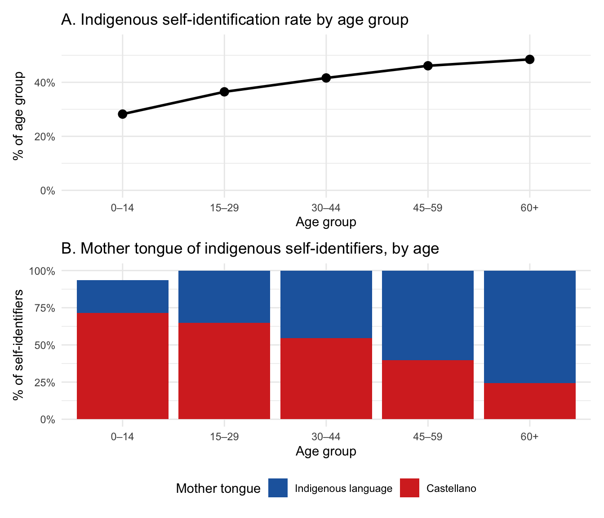
These two panels together capture a generational divergence: identity is partially decoupling from language. The 0–14 cohort has the lowest self-identification rate of any age group AND, among those who do identify, the highest share with Castellano as mother tongue. This is consistent with ongoing language shift — Spanish replacing indigenous languages across generations — while ethnic identity persists, albeit at lower rates, among some families.
A caveat: the 0–14 cohort’s responses are partially proxy-reported by parents, which may introduce different patterns from adult self-reporting.
Daily language use vs mother tongue (idioma_mayor_uso × idioma_mat)
idioma_mayor_uso records the language used most frequently in daily life. Cross-referencing it against idioma_mat (mother tongue) reveals whether people who learned an indigenous language still use it, or have shifted to Spanish in daily practice.
lang_use <- ds |>
filter(!is.na(idioma_mat), !is.na(idioma_mayor_uso)) |>
group_by(idioma_mat, idioma_mayor_uso) |>
summarise(n = n(), .groups = "drop") |>
collect() |>
mutate(
mat_label = idioma_cats$label[match(idioma_mat, idioma_cats$code)],
uso_label = idioma_cats$label[match(idioma_mayor_uso, idioma_cats$code)]
)
lang_use_age <- ds |>
filter(!is.na(idioma_mat), !is.na(idioma_mayor_uso)) |>
mutate(
age_group = case_when(
p26_edad < 15 ~ "0–14",
p26_edad < 30 ~ "15–29",
p26_edad < 45 ~ "30–44",
p26_edad < 60 ~ "45–59",
TRUE ~ "60+"
)
) |>
group_by(idioma_mat, idioma_mayor_uso, age_group) |>
summarise(n = n(), .groups = "drop") |>
collect() |>
mutate(
mat_label = idioma_cats$label[match(idioma_mat, idioma_cats$code)],
uso_label = idioma_cats$label[match(idioma_mayor_uso, idioma_cats$code)],
age_group = factor(age_group, levels = c("0–14","15–29","30–44","45–59","60+"))
)Overall retention rates
For each indigenous-language mother-tongue group, the share who still use that same language as their primary daily language:
lang_use |>
filter(mat_label %in% indigenous_langs) |>
mutate(
uso_group = case_when(
uso_label == mat_label ~ "Same indigenous language",
uso_label == "Castellano" ~ "Castellano",
uso_label %in% indigenous_langs ~ "Different indigenous language",
uso_label == "No habla" ~ "No habla",
TRUE ~ "Other/foreign"
)
) |>
group_by(mat_label, uso_group) |>
summarise(n = sum(n), .groups = "drop") |>
group_by(mat_label) |>
mutate(total = sum(n), pct = round(100 * n / total, 1)) |>
ungroup() |>
select(mat_label, uso_group, pct, total) |>
pivot_wider(names_from = uso_group, values_from = pct, values_fill = 0) |>
arrange(desc(`Same indigenous language`))# A tibble: 17 × 7
mat_label total Castellano Different indigenous…¹ `No habla` `Other/foreign`
<chr> <int> <dbl> <dbl> <dbl> <dbl>
1 Chácobo 1.29e3 2.1 0 0 0
2 Tsimane´ 1.88e4 3.2 0 0 0
3 Weenhayek 4.95e3 4.9 0 0 0
4 Zamuco 1.77e3 5.1 0 0.1 0
5 Uru-Chip… 1.98e3 5.5 0.2 0 0
6 Ese Ejja 1.46e3 9.9 0.1 0 0
7 Guaraní 4.60e4 21.3 0.1 0 0
8 Gwarayu 7.92e3 21.1 0.4 0 0
9 Kabineña 8.93e2 23.4 0.1 0 0
10 Quechua 1.42e6 30.4 0.2 0 0
11 Aymara 7.81e5 33.7 0.9 0 0
12 Yurakaré 9.26e2 38.1 0.5 0 0
13 Mosetén 1.13e3 41.4 0.3 0 0
14 Mojeño T… 1.86e3 47.6 0.8 0 0.1
15 Tacana 3.55e2 49.3 0 0.3 0.6
16 Bésiro 1.75e3 51.9 0 0.1 0
17 Mojeño I… 3.56e2 55.9 1.4 0 0
# ℹ abbreviated name: ¹`Different indigenous language`
# ℹ 1 more variable: `Same indigenous language` <dbl>Retention is very high (>90%) for geographically remote or numerically small groups (Chácobo, Tsimane´, Weenhayek, Zamuco, Uru-Chipaya). The two largest groups, Quechua (69%) and Aymara (65%), show substantially more shift to Castellano. Mojeño Ignaciano has the lowest retention at 43%.
Daily language use among indigenous mother-tongue speakers, by age
indigenous_langs_16 <- indigenous_langs[1:16]
lang_use_age |>
filter(mat_label %in% indigenous_langs_16) |>
mutate(
uso_group = case_when(
uso_label == mat_label ~ "Same language",
uso_label == "Castellano" ~ "Castellano",
TRUE ~ "Other"
),
uso_group = factor(uso_group, levels = c("Same language", "Other", "Castellano"))
) |>
group_by(mat_label, age_group, uso_group) |>
summarise(n = sum(n), .groups = "drop") |>
group_by(mat_label, age_group) |>
mutate(pct = n / sum(n)) |>
ungroup() |>
# Order languages by overall retention rate
mutate(
mat_label = fct_reorder(
mat_label,
ifelse(uso_group == "Same language", pct, 0),
.fun = sum, .desc = TRUE
)
) |>
ggplot(aes(x = age_group, y = pct, fill = uso_group)) +
geom_col() +
facet_wrap(~ mat_label, ncol = 4, nrow = 4) +
scale_y_continuous(labels = scales::percent_format()) +
scale_fill_manual(
values = c("Same language" = "#2166ac", "Other" = "#92c5de", "Castellano" = "#d73027"),
name = "Daily language"
) +
labs(
title = "Daily language use among indigenous mother-tongue speakers, by age",
subtitle = "idioma_mayor_uso by age group | 16 indigenous languages | full census",
x = "Age group", y = "Share of speakers"
) +
theme_minimal(base_size = 10) +
theme(
legend.position = "bottom",
axis.text.x = element_text(angle = 45, hjust = 1, size = 8),
axis.text.y = element_text(size = 8),
strip.text = element_text(face = "bold", size = 9),
panel.spacing = unit(0.5, "lines")
)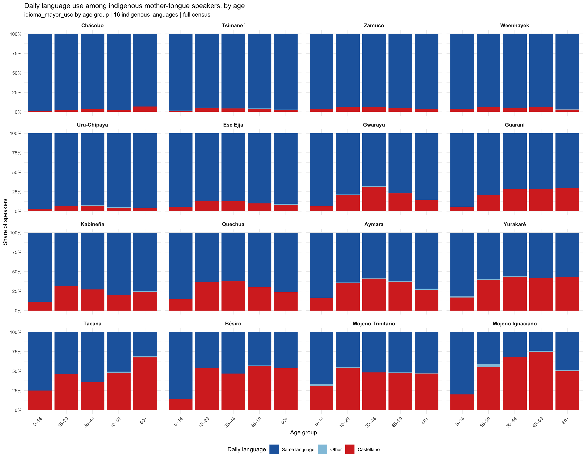
The grid reveals striking variation in age-graded language retention across Bolivia’s indigenous languages:
- High overall retention (Quechua, Aymara, Guaraní) show non-monotonic patterns: children and elders retain the language more than working-age adults, suggesting lifecycle or generational effects tied to schooling and labour market participation.
- Near-complete retention across all ages (Tsimane´, Chácobo, Weenhayek, Zamuco, Uru-Chipaya) reflects geographic isolation and smaller speaker populations with tight-knit speech communities.
- Low retention languages (Mojeño Ignaciano, Tacana) show weak maintenance even among older speakers, indicating decades-long pressure.
- Middle-ground cases (Guarayo, Maropa, Moxo) show variable patterns: some age cohorts retain the language moderately, others have largely shifted to Castellano.
Heatmap: retention across all 16 groups and all age cohorts
lang_use_age |>
filter(mat_label %in% indigenous_langs) |>
group_by(mat_label, age_group) |>
summarise(
total = sum(n),
n_retain = sum(n[which(uso_label == mat_label)]),
pct = round(100 * n_retain / total, 1),
.groups = "drop"
) |>
group_by(mat_label) |>
mutate(overall = sum(n_retain) / sum(total)) |>
ungroup() |>
mutate(mat_label = fct_reorder(mat_label, overall)) |>
ggplot(aes(x = age_group, y = mat_label, fill = pct)) +
geom_tile(color = "white", linewidth = 0.4) +
geom_text(aes(label = paste0(pct, "%")), size = 2.8) +
scale_fill_distiller(palette = "RdYlBu", direction = 1,
name = "% using same\nlanguage daily",
limits = c(0, 100)) +
labs(
title = "Language retention: % using mother tongue as primary daily language",
subtitle = "idioma_mayor_uso vs idioma_mat | full census",
x = "Age group", y = NULL
) +
theme_minimal(base_size = 11) +
theme(panel.grid = element_blank())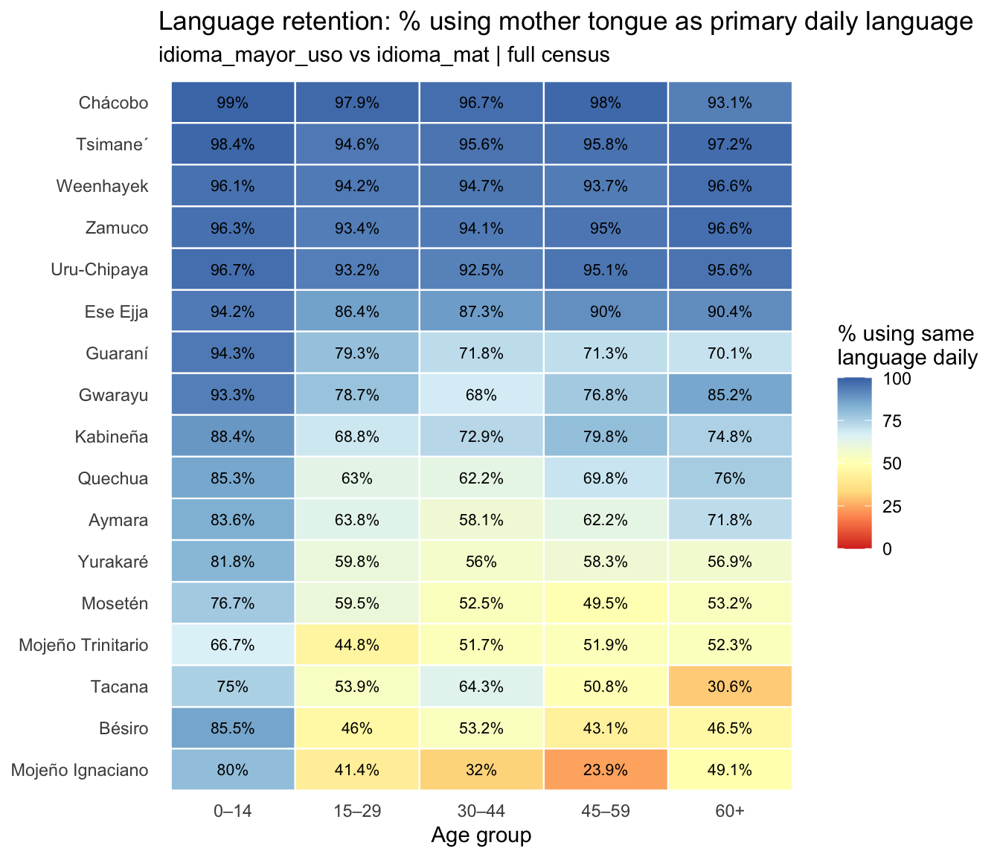
Notable patterns in the heatmap:
- Tacana and Mojeño Ignaciano have strikingly low retention among 60+ speakers (31% and 49% respectively), suggesting these languages have been under pressure for several generations, not just recently.
- Gwarayu shows a dip in middle-age cohorts (30–44: 68%) but higher retention among both the young (93%) and old (85%) — possibly reflecting a revitalisation effort or migration patterns.
- The 0–14 column is generally higher than 15–29 across most languages. This likely reflects that young children who speak an indigenous language at home have not yet entered school or the labour market, where Spanish dominates.
Retention by stratum: Urban/Rural and indigenous identity
The aggregates below are pre-collected and joined with the Vivienda file’s urbrur column (1 = Urbana, 2 = Rural), then re-aggregated by stratum. All persona rows joined perfectly (0 NA dwelling keys).
BASE_DATA <- "../bolivia-data/Censo 2024/base_datos_csv_2024"
lang_use_urban <- readRDS(file.path(BASE_DATA, "lang_use_urban.rds"))
lang_use_identity <- readRDS(file.path(BASE_DATA, "lang_use_identity.rds"))
# Helper: compute retention rate per language per stratum
compute_retention <- function(df, strat_col) {
df |>
mutate(
mat_label = idioma_cats$label[match(idioma_mat, idioma_cats$code)],
uso_label = idioma_cats$label[match(idioma_mayor_uso, idioma_cats$code)]
) |>
filter(mat_label %in% indigenous_langs) |>
group_by(across(all_of(c("mat_label", strat_col)))) |>
summarise(
total = sum(n),
n_retain = sum(n[which(mat_label == uso_label)]),
pct = round(100 * n_retain / total, 1),
.groups = "drop"
)
}
# Language order by overall retention (from lang_use)
lang_order <- lang_use |>
mutate(
mat_label = idioma_cats$label[match(idioma_mat, idioma_cats$code)],
uso_label = idioma_cats$label[match(idioma_mayor_uso, idioma_cats$code)]
) |>
filter(mat_label %in% indigenous_langs) |>
group_by(mat_label) |>
summarise(overall = sum(n[which(mat_label == uso_label)]) / sum(n), .groups = "drop") |>
arrange(overall)
ret_urban <- compute_retention(lang_use_urban, "urbrur_label") |>
mutate(mat_label = factor(mat_label, levels = lang_order$mat_label))
ret_identity <- compute_retention(lang_use_identity, "identifies") |>
mutate(mat_label = factor(mat_label, levels = lang_order$mat_label))p_urban <- ggplot(ret_urban,
aes(x = pct, y = mat_label, color = urbrur_label, shape = urbrur_label)) +
geom_line(aes(group = mat_label), color = "grey70", linewidth = 0.6) +
geom_point(size = 3) +
scale_x_continuous(limits = c(0, 100), labels = \(x) paste0(x, "%")) +
scale_color_manual(values = c("Urban" = "#d73027", "Rural" = "#2166ac"), name = NULL) +
scale_shape_manual(values = c("Urban" = 16, "Rural" = 15), name = NULL) +
labs(
title = "Language retention: Urban vs Rural",
subtitle = "% using mother tongue as primary daily language",
x = "Retention rate", y = NULL
) +
theme_minimal(base_size = 11) +
theme(legend.position = "bottom")
p_identity <- ggplot(ret_identity,
aes(x = pct, y = mat_label, color = identifies, shape = identifies)) +
geom_line(aes(group = mat_label), color = "grey70", linewidth = 0.6) +
geom_point(size = 3) +
scale_x_continuous(limits = c(0, 100), labels = \(x) paste0(x, "%")) +
scale_color_manual(
values = c("Self-identifies" = "#2166ac", "Does not identify" = "#d73027"), name = NULL
) +
scale_shape_manual(
values = c("Self-identifies" = 16, "Does not identify" = 15), name = NULL
) +
labs(
title = "Language retention: Indigenous self-identifiers vs non-identifiers",
subtitle = "% using mother tongue as primary daily language",
x = "Retention rate", y = NULL
) +
theme_minimal(base_size = 11) +
theme(legend.position = "bottom")
p_urban | p_identity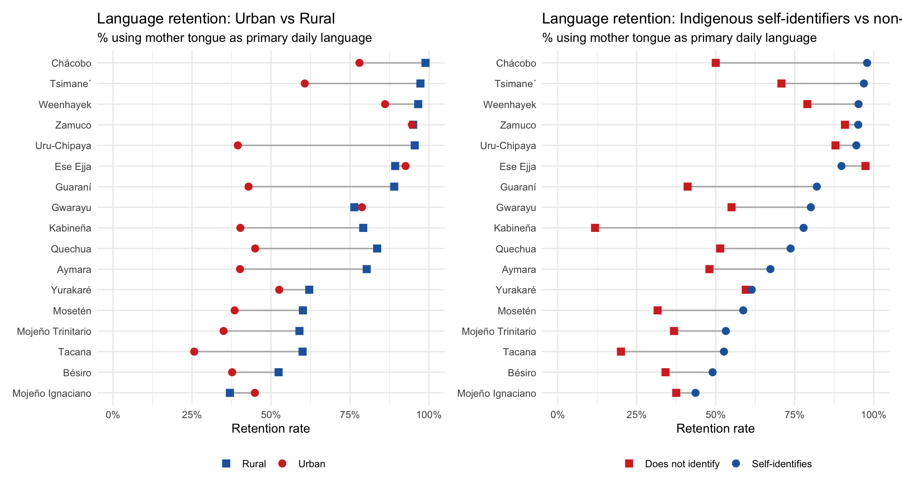
Urban/Rural (left panel): The urban/rural gap is large and consistent. Rural speakers retain their mother tongue at much higher rates — the gap exceeds 35 percentage points for Quechua, Aymara, Guaraní, Kabineña, and Tsimane´. The two exceptions are Ese Ejja (similar in both, ~90%) and Mojeño Ignaciano (urban slightly higher than rural at 45% vs 37%, both low). Uru-Chipaya has one of the largest gaps (rural 96%, urban 40%), consistent with a small, isolated community whose urban migrants shift rapidly to Spanish.
Indigenous self-identification (right panel): Self-identifiers consistently retain their mother tongue at higher rates than non-identifiers. The gap is most pronounced for languages with lower overall retention — Guaraní (82% vs 41%), Aymara (67% vs 48%), Kabineña (78% vs 12%). Among the most isolated groups (Tsimane´, Weenhayek, Zamuco, Uru-Chipaya), retention is near-complete for self-identifiers but remains moderately high even among non-identifiers, suggesting those communities have little exit from the language regardless of how individuals choose to identify.
Retention heatmaps by stratum and age
The four heatmaps below replicate the overall retention-by-age heatmap for each of the two stratification pairs. Pre-collected aggregates are loaded from disk.
lang_age_urban <- readRDS(file.path(BASE_DATA, "lang_age_urban.rds"))
lang_age_identity <- readRDS(file.path(BASE_DATA, "lang_age_identity.rds"))
retention_heatmap_data <- function(df, strat_col) {
df |>
mutate(
mat_label = idioma_cats$label[match(idioma_mat, idioma_cats$code)],
uso_label = idioma_cats$label[match(idioma_mayor_uso, idioma_cats$code)]
) |>
filter(mat_label %in% indigenous_langs) |>
group_by(across(all_of(c("mat_label", strat_col, "age_group")))) |>
summarise(
total = sum(n),
n_retain = sum(n[which(mat_label == uso_label)]),
pct = round(100 * n_retain / total, 1),
.groups = "drop"
) |>
mutate(mat_label = factor(mat_label, levels = lang_order$mat_label))
}
hm_urban <- retention_heatmap_data(lang_age_urban, "urbrur_label")
hm_identity <- retention_heatmap_data(lang_age_identity, "identifies")
make_heatmap <- function(data, strat_col, strat_val, title, show_y = TRUE) {
d <- data |> filter(.data[[strat_col]] == strat_val)
p <- ggplot(d, aes(x = age_group, y = mat_label, fill = pct)) +
geom_tile(color = "white", linewidth = 0.4) +
geom_text(aes(label = paste0(pct, "%")), size = 2.5) +
scale_fill_distiller(palette = "RdYlBu", direction = 1,
limits = c(0, 100), name = "Retention\n(%)") +
labs(title = title, x = NULL, y = NULL) +
theme_minimal(base_size = 10) +
theme(panel.grid = element_blank(),
plot.title = element_text(size = 10, face = "bold"),
legend.key.height = unit(0.8, "cm"))
if (!show_y) p <- p + theme(axis.text.y = element_blank())
p
}Rural vs Urban
library(patchwork)
# Wrap the operation to ensure S7 doesn't intercept it incorrectly
combined_plot <- (make_heatmap(hm_urban, "urbrur_label", "Rural", "Rural", show_y = TRUE) |
make_heatmap(hm_urban, "urbrur_label", "Urban", "Urban", show_y = FALSE)) +
plot_annotation(
title = "Language retention by age: Rural vs Urban",
subtitle = "% of indigenous mother-tongue speakers using same language daily | full census",
theme = theme(plot.title = element_text(face = "bold"),
plot.subtitle = element_text(size = 9))
) +
plot_layout(guides = "collect")
combined_plot & theme(legend.position = "right")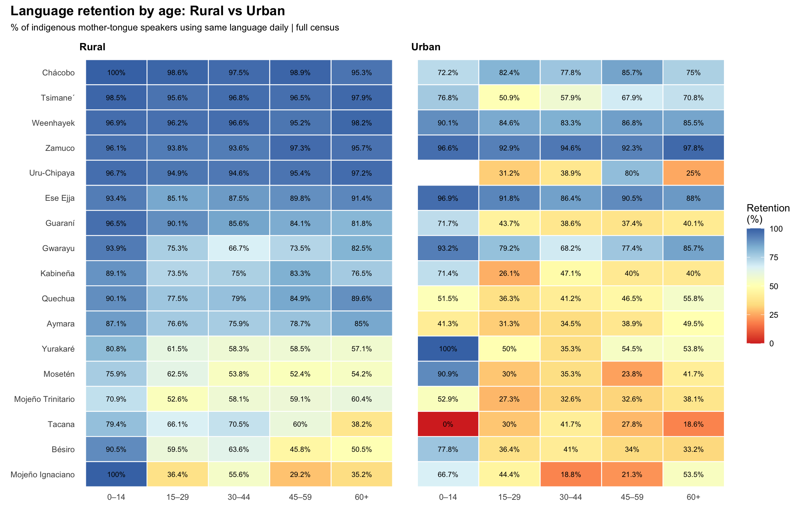
Urban retention is substantially lower for nearly every language and every age group. The most dramatic contrasts are in Quechua (rural 0–14: 90%, urban 0–14: 52%) and Aymara (rural 0–14: 87%, urban 0–14: 41%), showing that urban language shift begins early in childhood. Tsimane´ is the notable exception: even urban Tsimane´ children retain at 77%, suggesting that community ties or residential clustering maintain the language even in city settings. In rural areas, most languages show the expected U-shape (high retention among children and elders, dip among working-age adults); the urban panels flatten this pattern, with low retention sustained across all ages.
Tacana and Mojeño Ignaciano stand out: both show near-zero or very low retention among 45–59 year-olds in rural areas (60% and 29% respectively), indicating that language shift among these groups pre-dates urbanisation and reflects longer-term community-level decline.
Self-identifies vs Does not identify
(make_heatmap(hm_identity, "identifies", "Self-identifies", "Self-identifies", show_y = TRUE) |
make_heatmap(hm_identity, "identifies", "Does not identify","Does not identify", show_y = FALSE)) +
plot_annotation(
title = "Language retention by age: Self-identifies as indigenous vs Does not identify",
subtitle = "% of indigenous mother-tongue speakers using same language daily | full census",
theme = theme(plot.title = element_text(face = "bold"),
plot.subtitle = element_text(size = 9))
) +
plot_layout(guides = "collect") &
theme(legend.position = "right")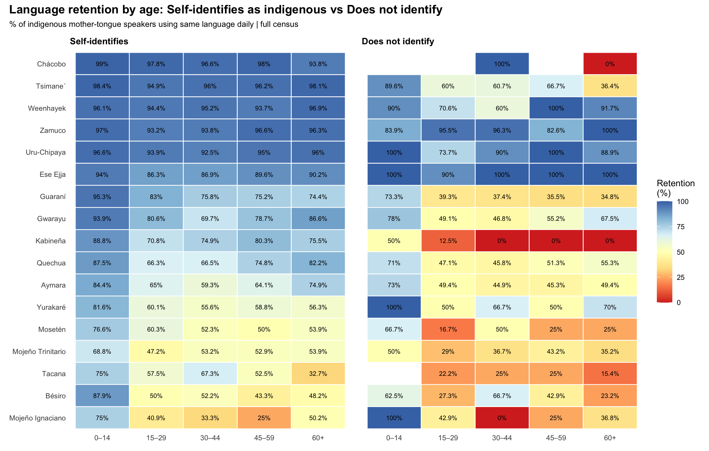
Self-identifiers consistently retain at higher rates. The “Does not identify” panel shows substantially lower retention across all languages, but the pattern is noisier — several cells for smaller languages (Kabineña, Tacana, Mojeño Ignaciano) are based on very small counts and should be interpreted with caution.
For the largest groups, the gap is substantial and age-graded. Among Quechua speakers aged 15–29: self-identifiers retain at 66%, non-identifiers at 47%. For Aymara: 65% vs 45%. This suggests that ethnic identity and daily language use are mutually reinforcing — people who have shifted to Spanish in daily life are also less likely to self-identify, and vice versa — though causality cannot be established from cross-sectional data.
Among the most isolated groups (Tsimane´, Weenhayek, Zamuco, Uru-Chipaya), the “Does not identify” column remains relatively high (60–100%), consistent with community-level language maintenance that is independent of individual identity choices. Kabineña non-identifiers aged 30–44 and 45–59 show 0% retention (very small n), while self-identifiers in those cohorts retain at 47–80% — the sharpest identity-linked divergence in the dataset.
Intergenerational language transmission: household-level analysis
The retention heatmaps above track adults who learned an indigenous language as children and still use it daily. This section asks a more direct question: are children currently growing up with Aymara or Quechua?
The metric is constructed from household relationships. For each child aged 0–14, we identify parents in the same dwelling (head of household and spouse, p24_parentes codes 1 and 2). We then ask: among children whose parent speaks Aymara (or Quechua) as a mother tongue, what percentage currently speak that language themselves (in any of their three p331/p332/p333 slots)?
This is a direct measure of parental language transmission — not of cultural identity, but of whether the language is actively spoken to children at home.
aymara_transmission_clean <- readRDS("data/aymara_transmission_by_muni.rds")
quechua_transmission_clean <- readRDS("data/quechua_transmission_by_muni.rds")
guarani_transmission_clean <- readRDS("data/guarani_transmission_by_muni.rds")
other_transmission_clean <- readRDS("data/other_transmission_by_muni.rds")
# Total population per municipality (pre-computed from persona_geo; see data/muni_pop_all.rds)
muni_pop_all <- readRDS("data/muni_pop_all.rds")
# Per-municipality top-2 "other" language labels for the bar chart secondary axis
# (pre-computed from persona_geo; see data/other_lang_labels.rds)
other_lang_labels <- readRDS("data/other_lang_labels.rds")
# National totals
aymara_nat <- aymara_transmission_clean |> summarise(n = sum(n_children_with_parent), s = sum(n_children_speak_aymara))
quechua_nat <- quechua_transmission_clean |> summarise(n = sum(n_children_with_parent), s = sum(n_children_speak_quechua))
cat(sprintf("Aymara — %s children with Aymara-speaking parent(s); %s speak Aymara (%.1f%%)\n",
scales::comma(aymara_nat$n), scales::comma(aymara_nat$s), 100 * aymara_nat$s / aymara_nat$n))Aymara — 425,655 children with Aymara-speaking parent(s); 123,894 speak Aymara (29.1%)cat(sprintf("Quechua — %s children with Quechua-speaking parent(s); %s speak Quechua (%.1f%%)\n",
scales::comma(quechua_nat$n), scales::comma(quechua_nat$s), 100 * quechua_nat$s / quechua_nat$n))Quechua — 915,114 children with Quechua-speaking parent(s); 365,976 speak Quechua (40.0%)guarani_nat <- guarani_transmission_clean |>
summarise(n = sum(n_children_with_parent), s = sum(n_children_speak_guarani))
other_nat <- other_transmission_clean |>
summarise(n = sum(n_children_with_parent), s = sum(n_children_speak_other))
cat(sprintf("Guaraní — %s children with Guaraní-speaking parent(s); %s speak Guaraní (%.1f%%)\n",
scales::comma(guarani_nat$n), scales::comma(guarani_nat$s), 100 * guarani_nat$s / guarani_nat$n))Guaraní — 36,324 children with Guaraní-speaking parent(s); 20,154 speak Guaraní (55.5%)cat(sprintf("Other — %s children with other-indigenous-speaking parent(s); %s speak same language (%.1f%%)\n",
scales::comma(other_nat$n), scales::comma(other_nat$s), 100 * other_nat$s / other_nat$n))Other — 38,256 children with other-indigenous-speaking parent(s); 25,972 speak same language (67.9%)National transmission rates vary markedly across language families. Guaraní (56%) and other indigenous languages (68%) transmit at considerably higher rates than Aymara (29%) or Quechua (40%). This reflects the geographic and demographic context: Guaraní and smaller lowland languages are concentrated in tight-knit, often rural communities where Spanish pressure is lower, whereas Aymara and Quechua speakers include large urban populations (El Alto, La Paz, Cochabamba) where language shift is most pronounced.
library(sf)
gadm_bol <- read_sf("data/gadm41_BOL_3.gpkg", layer = "ADM_ADM_3")
gadm_joined <- gadm_bol |>
left_join(
muni_lookup |> select(id_muni, muni_gadm, department) |> distinct(),
by = c("NAME_3" = "muni_gadm", "NAME_1" = "department")
)A helper to create the top-30-by-speaker chart for any language:
top30_chart <- function(transmission_df, speaker_col, lang_name, fill_colour,
min_parents = 10, n = 30) {
transmission_df |>
filter(!is.na(.data[[speaker_col]])) |>
slice_max(order_by = .data[[speaker_col]], n = n) |>
left_join(
muni_lookup |> select(id_muni, muni_ine, department) |> distinct(),
by = c("muni_code" = "id_muni")
) |>
mutate(
label = paste0(muni_ine, " (", department, ")"),
label = fct_reorder(label, .data[[speaker_col]]),
show_rate = if_else(n_children_with_parent >= min_parents, transmission_rate, NA_real_)
) |>
ggplot(aes(x = show_rate, y = label)) +
geom_col(fill = fill_colour, alpha = 0.8, na.rm = TRUE) +
geom_text(
aes(label = if_else(!is.na(show_rate),
scales::percent(show_rate, accuracy = 1), "—"),
x = if_else(!is.na(show_rate), show_rate + 0.01, 0.01)),
hjust = 0, size = 3.2, color = "grey30"
) +
scale_x_continuous(
labels = scales::percent_format(),
expand = expansion(mult = c(0, 0.18))
) +
labs(
title = paste0(lang_name, " transmission — top 30 municipalities by speaker count"),
subtitle = paste0("Bolivia CNPV 2024 | bars suppressed where <", min_parents, " speaking parents"),
x = "Transmission rate", y = NULL
) +
theme_minimal(base_size = 11) +
theme(
plot.title = element_text(face = "bold", margin = margin(b = 3)),
plot.subtitle = element_text(color = "grey40", size = rel(0.82), margin = margin(b = 8)),
panel.grid.major.y = element_blank()
)
}
bubble_chart <- function(transmission_df, speaker_col, lang_name, fill_colour,
muni_pop, min_parents = 10, n = 50) {
transmission_df |>
filter(!is.na(.data[[speaker_col]]),
n_children_with_parent >= min_parents) |>
slice_max(order_by = .data[[speaker_col]], n = n) |>
left_join(muni_pop, by = "muni_code") |>
left_join(
muni_lookup |> select(id_muni, muni_ine, department) |> distinct(),
by = c("muni_code" = "id_muni")
) |>
mutate(speaker_share = .data[[speaker_col]] / n_total) |>
ggplot(aes(x = speaker_share, y = transmission_rate,
size = .data[[speaker_col]])) +
geom_point(fill = fill_colour, color = "white", alpha = 0.75, shape = 21) +
scale_x_continuous(
labels = scales::percent_format(accuracy = 1),
expand = expansion(mult = c(0.02, 0.05))
) +
scale_y_continuous(
labels = scales::percent_format(accuracy = 1),
limits = c(0, 1),
expand = expansion(mult = c(0.02, 0.03))
) +
scale_size_area(max_size = 14, labels = scales::comma, name = "Speakers") +
labs(
title = paste0(lang_name, " — prevalence vs. transmission rate"),
subtitle = paste0(
"Bolivia CNPV 2024 | top ", n, " municipalities by speaker count",
" | suppressed where <", min_parents, " speaking parents"
),
x = paste0("Share of municipal population (", lang_name, " mother tongue)"),
y = "Transmission rate"
) +
theme_minimal(base_size = 11) +
theme(
plot.title = element_text(face = "bold", margin = margin(b = 3)),
plot.subtitle = element_text(color = "grey40", size = rel(0.82), margin = margin(b = 8))
)
}Choropleths: speakers and transmission rate
Aymara
aymara_choropleth <- gadm_joined |>
left_join(aymara_transmission_clean, by = c("id_muni" = "muni_code")) |>
mutate(
transmission_mapped = if_else(
!is.na(n_parents_aymara) & n_parents_aymara >= 100,
transmission_rate, NA_real_
)
)
p_map_speakers <- ggplot(aymara_choropleth) +
geom_sf(aes(fill = n_speakers_aymara), color = "white", linewidth = 0.1) +
scale_fill_distiller(
palette = "Reds", direction = 1, na.value = "grey90",
labels = scales::comma, name = "Speakers",
trans = "log10", breaks = c(100, 1000, 10000, 100000),
guide = guide_colorbar(barwidth = 8, barheight = 0.5, title.position = "top")
) +
labs(title = "Aymara speakers") +
theme_void(base_size = 11) +
theme(
plot.title = element_text(face = "bold", hjust = 0.5, margin = margin(b = 6)),
legend.position = "bottom",
legend.title = element_text(size = rel(0.75), hjust = 0.5),
legend.text = element_text(size = rel(0.65))
)
p_map_transmission <- ggplot(aymara_choropleth) +
geom_sf(aes(fill = transmission_mapped), color = "white", linewidth = 0.1) +
scale_fill_distiller(
palette = "Blues", direction = 1, na.value = "grey90",
labels = scales::percent_format(accuracy = 1),
name = "Transmission rate", limits = c(0, 1),
guide = guide_colorbar(barwidth = 8, barheight = 0.5, title.position = "top")
) +
labs(title = "Aymara transmission rate",
subtitle = "(only shown where ≥100 Aymara-speaking parents)") +
theme_void(base_size = 11) +
theme(
plot.title = element_text(face = "bold", hjust = 0.5, margin = margin(b = 2)),
plot.subtitle = element_text(color = "grey40", size = rel(0.72), hjust = 0.5,
margin = margin(b = 6)),
legend.position = "bottom",
legend.title = element_text(size = rel(0.75), hjust = 0.5),
legend.text = element_text(size = rel(0.65))
)
p_map_speakers | p_map_transmission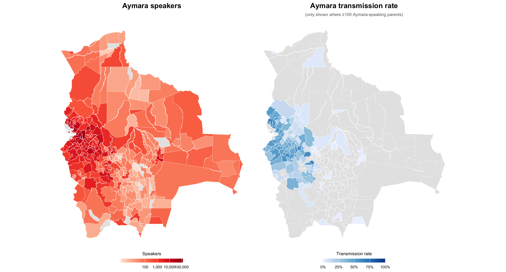
Aymara speakers are concentrated in the altiplano (La Paz and Oruro departments), with a secondary presence in Cochabamba and Santa Cruz. Rural altiplano municipalities around Lake Titicaca show the highest transmission (40–65%). El Alto and La Paz city show much lower transmission (12% and 7% respectively) despite having the largest absolute speaker populations, consistent with urban language shift.
top30_chart(aymara_transmission_clean, "n_speakers_aymara", "Aymara", "#d62728",
min_parents = 100)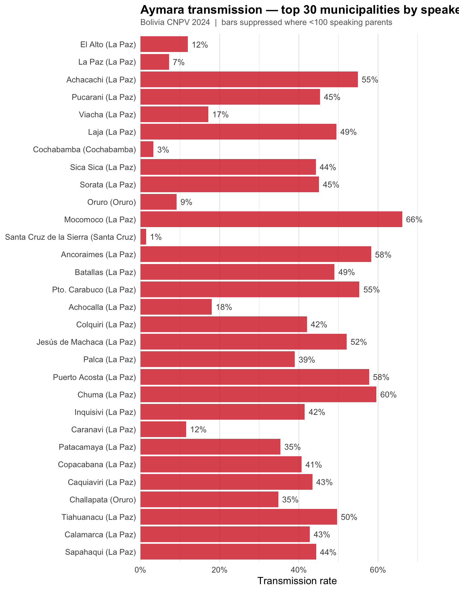
bubble_chart(aymara_transmission_clean, "n_speakers_aymara", "Aymara", "#d62728",
muni_pop_all, min_parents = 100)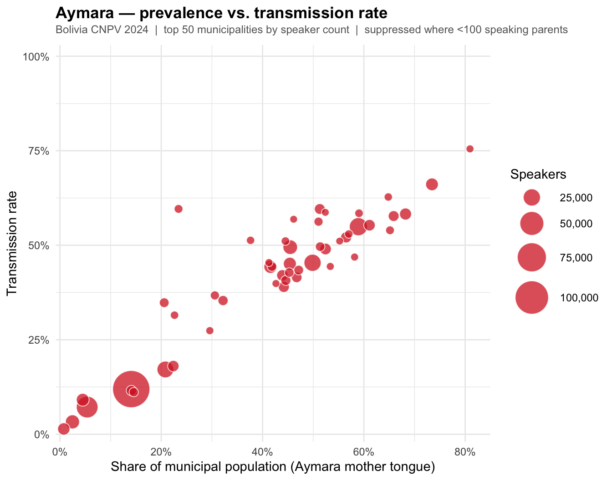
Quechua
quechua_choropleth <- gadm_joined |>
left_join(quechua_transmission_clean, by = c("id_muni" = "muni_code")) |>
mutate(
transmission_mapped = if_else(
!is.na(n_parents_quechua) & n_parents_quechua >= 100,
transmission_rate, NA_real_
)
)
p_q_speakers <- ggplot(quechua_choropleth) +
geom_sf(aes(fill = n_speakers_quechua), color = "white", linewidth = 0.1) +
scale_fill_distiller(
palette = "Oranges", direction = 1, na.value = "grey90",
labels = scales::comma, name = "Speakers",
trans = "log10", breaks = c(100, 1000, 10000, 100000),
guide = guide_colorbar(barwidth = 8, barheight = 0.5, title.position = "top")
) +
labs(title = "Quechua speakers") +
theme_void(base_size = 11) +
theme(
plot.title = element_text(face = "bold", hjust = 0.5, margin = margin(b = 6)),
legend.position = "bottom",
legend.title = element_text(size = rel(0.75), hjust = 0.5),
legend.text = element_text(size = rel(0.65))
)
p_q_transmission <- ggplot(quechua_choropleth) +
geom_sf(aes(fill = transmission_mapped), color = "white", linewidth = 0.1) +
scale_fill_distiller(
palette = "YlOrBr", direction = 1, na.value = "grey90",
labels = scales::percent_format(accuracy = 1),
name = "Transmission rate", limits = c(0, 1),
guide = guide_colorbar(barwidth = 8, barheight = 0.5, title.position = "top")
) +
labs(title = "Quechua transmission rate",
subtitle = "(only shown where ≥100 Quechua-speaking parents)") +
theme_void(base_size = 11) +
theme(
plot.title = element_text(face = "bold", hjust = 0.5, margin = margin(b = 2)),
plot.subtitle = element_text(color = "grey40", size = rel(0.72), hjust = 0.5,
margin = margin(b = 6)),
legend.position = "bottom",
legend.title = element_text(size = rel(0.75), hjust = 0.5),
legend.text = element_text(size = rel(0.65))
)
p_q_speakers | p_q_transmission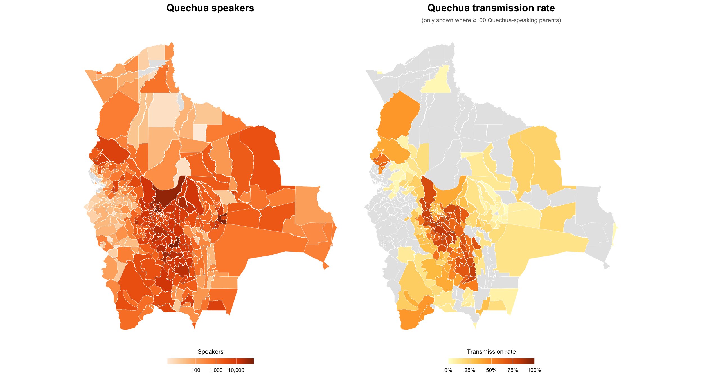
Quechua has a broader geographic footprint than Aymara, spanning the Andean valleys from Potosí through Cochabamba to southern Chuquisaca. Transmission is highest in the rural valley municipalities of Potosí and Chuquisaca (often 60–80%) and lowest in urban cores (Cochabamba city ~15%, Potosí city ~25%).
top30_chart(quechua_transmission_clean, "n_speakers_quechua", "Quechua", "#ff7f0e",
min_parents = 100)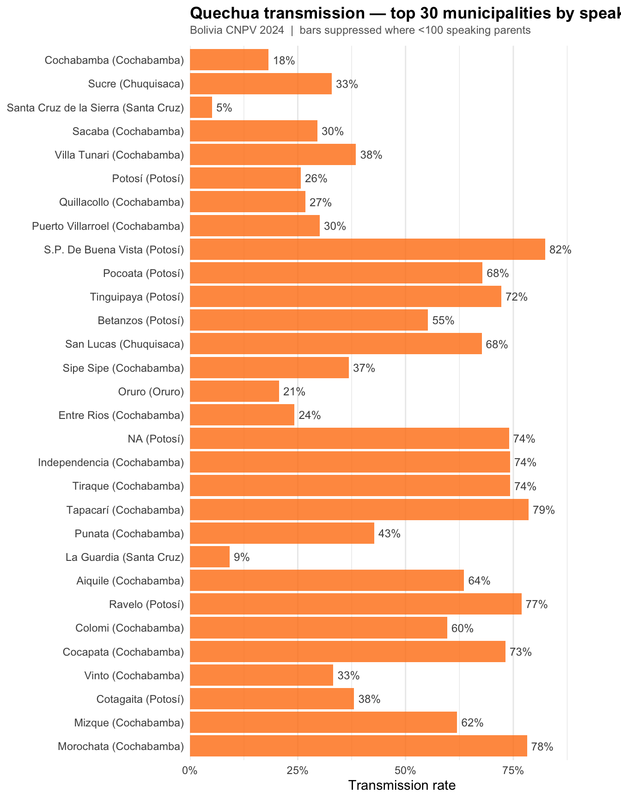
bubble_chart(quechua_transmission_clean, "n_speakers_quechua", "Quechua", "#ff7f0e",
muni_pop_all, min_parents = 100)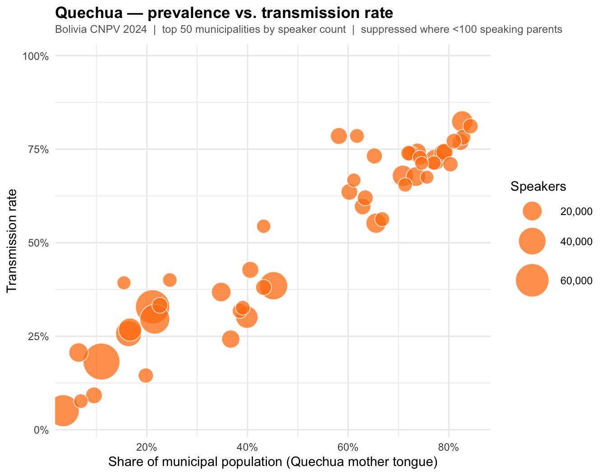
Guaraní
guarani_choropleth <- gadm_joined |>
left_join(guarani_transmission_clean, by = c("id_muni" = "muni_code")) |>
mutate(
transmission_mapped = if_else(
!is.na(n_parents_guarani) & n_parents_guarani >= 20,
transmission_rate, NA_real_
)
)
p_g_speakers <- ggplot(guarani_choropleth) +
geom_sf(aes(fill = n_speakers_guarani), color = "white", linewidth = 0.1) +
scale_fill_distiller(
palette = "Greens", direction = 1, na.value = "grey90",
labels = scales::comma, name = "Speakers",
trans = "log10", breaks = c(10, 100, 1000, 10000),
guide = guide_colorbar(barwidth = 8, barheight = 0.5, title.position = "top")
) +
labs(title = "Guaraní speakers") +
theme_void(base_size = 11) +
theme(
plot.title = element_text(face = "bold", hjust = 0.5, margin = margin(b = 6)),
legend.position = "bottom",
legend.title = element_text(size = rel(0.75), hjust = 0.5),
legend.text = element_text(size = rel(0.65))
)
p_g_transmission <- ggplot(guarani_choropleth) +
geom_sf(aes(fill = transmission_mapped), color = "white", linewidth = 0.1) +
scale_fill_distiller(
palette = "BuGn", direction = 1, na.value = "grey90",
labels = scales::percent_format(accuracy = 1),
name = "Transmission rate", limits = c(0, 1),
guide = guide_colorbar(barwidth = 8, barheight = 0.5, title.position = "top")
) +
labs(title = "Guaraní transmission rate",
subtitle = "(only shown where ≥20 Guaraní-speaking parents)") +
theme_void(base_size = 11) +
theme(
plot.title = element_text(face = "bold", hjust = 0.5, margin = margin(b = 2)),
plot.subtitle = element_text(color = "grey40", size = rel(0.72), hjust = 0.5,
margin = margin(b = 6)),
legend.position = "bottom",
legend.title = element_text(size = rel(0.75), hjust = 0.5),
legend.text = element_text(size = rel(0.65))
)
p_g_speakers | p_g_transmission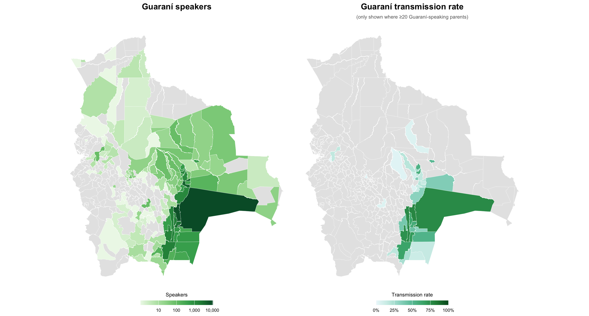
Guaraní is concentrated in the Chaco lowlands of Tarija, Chuquisaca, and Santa Cruz. The transmission map is shown at a lower threshold (≥20 Guaraní-speaking parents) given smaller community sizes. High-transmission municipalities cluster in the Chaco Boreal where Guaraní-speaking communities are most intact.
top30_chart(guarani_transmission_clean, "n_speakers_guarani", "Guaraní", "#2ca02c",
min_parents = 20)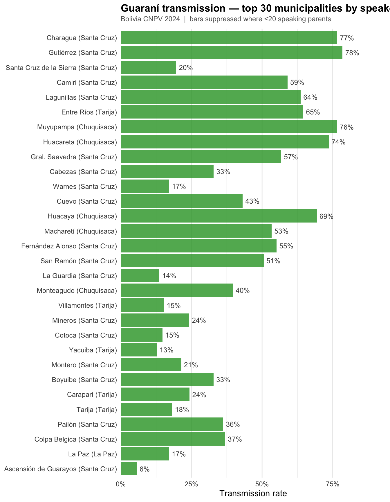
bubble_chart(guarani_transmission_clean, "n_speakers_guarani", "Guaraní", "#2ca02c",
muni_pop_all, min_parents = 20)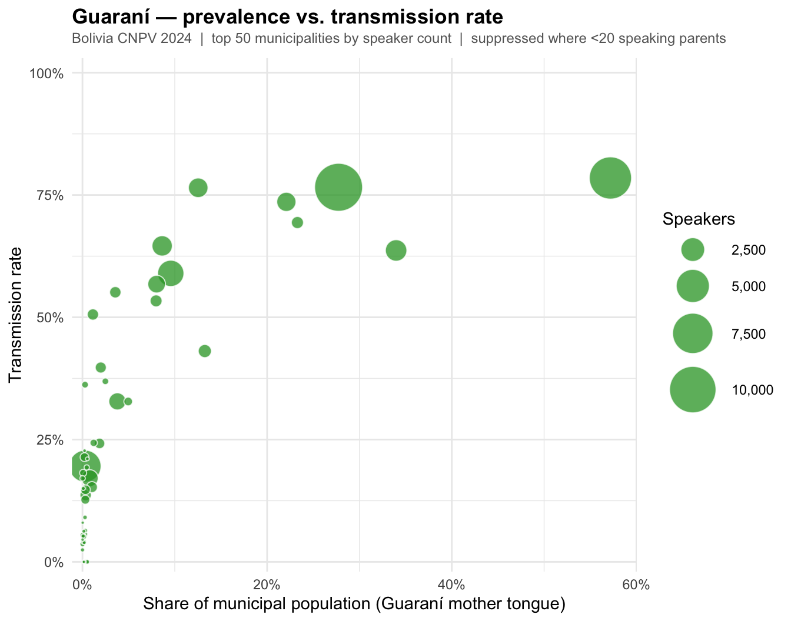
Other indigenous languages
The “other” category aggregates all indigenous languages other than Aymara, Quechua, and Guaraní (codes 1–37 in the census, excluding 2, 12, 27). Transmission is evaluated language-specifically — a child is counted as “speaking” only if they speak the same language as their parent, not just any indigenous language. This group includes Tsimane´, Chiquitano (Bésiro), Moxeño, Mosetén, Cavineño, Uru-Chipaya, Tacana, and dozens of smaller lowland languages.
other_choropleth <- gadm_joined |>
left_join(other_transmission_clean, by = c("id_muni" = "muni_code")) |>
mutate(
transmission_mapped = if_else(
!is.na(n_parents_other) & n_parents_other >= 10,
transmission_rate, NA_real_
)
)
p_o_speakers <- ggplot(other_choropleth) +
geom_sf(aes(fill = n_speakers_other), color = "white", linewidth = 0.1) +
scale_fill_distiller(
palette = "Purples", direction = 1, na.value = "grey90",
labels = scales::comma, name = "Speakers",
trans = "log10", breaks = c(10, 100, 1000, 10000),
guide = guide_colorbar(barwidth = 8, barheight = 0.5, title.position = "top")
) +
labs(title = "Other indigenous language speakers") +
theme_void(base_size = 11) +
theme(
plot.title = element_text(face = "bold", hjust = 0.5, margin = margin(b = 6)),
legend.position = "bottom",
legend.title = element_text(size = rel(0.75), hjust = 0.5),
legend.text = element_text(size = rel(0.65))
)
p_o_transmission <- ggplot(other_choropleth) +
geom_sf(aes(fill = transmission_mapped), color = "white", linewidth = 0.1) +
scale_fill_distiller(
palette = "BuPu", direction = 1, na.value = "grey90",
labels = scales::percent_format(accuracy = 1),
name = "Transmission rate", limits = c(0, 1),
guide = guide_colorbar(barwidth = 8, barheight = 0.5, title.position = "top")
) +
labs(title = "Other indigenous transmission rate",
subtitle = "(only shown where ≥10 speaking parents)") +
theme_void(base_size = 11) +
theme(
plot.title = element_text(face = "bold", hjust = 0.5, margin = margin(b = 2)),
plot.subtitle = element_text(color = "grey40", size = rel(0.72), hjust = 0.5,
margin = margin(b = 6)),
legend.position = "bottom",
legend.title = element_text(size = rel(0.75), hjust = 0.5),
legend.text = element_text(size = rel(0.65))
)
p_o_speakers | p_o_transmission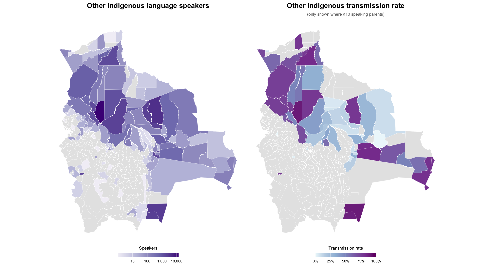
local({
fill_colour <- "#9467bd"
speaker_col <- "n_speakers_other"
min_parents <- 10
n <- 30
plot_data <- other_transmission_clean |>
filter(!is.na(.data[[speaker_col]])) |>
slice_max(order_by = .data[[speaker_col]], n = n) |>
left_join(
muni_lookup |> select(id_muni, muni_ine, department) |> distinct(),
by = c("muni_code" = "id_muni")
) |>
left_join(other_lang_labels, by = "muni_code") |>
mutate(
label = coalesce(paste0(muni_ine, " (", department, ")"),
paste0("(", muni_code, ")")),
label = fct_reorder(label, .data[[speaker_col]]),
show_rate = if_else(n_children_with_parent >= min_parents,
transmission_rate, NA_real_)
)
ggplot(plot_data, aes(x = show_rate, y = label)) +
geom_col(fill = fill_colour, alpha = 0.8, na.rm = TRUE) +
geom_text(
aes(label = if_else(!is.na(show_rate),
scales::percent(show_rate, accuracy = 1), "—"),
x = if_else(!is.na(show_rate), show_rate + 0.01, 0.01)),
hjust = 0, size = 3.2, color = "grey30"
) +
geom_text(
aes(x = Inf, label = right_label),
hjust = 1.05, size = 2.8, color = "grey45", na.rm = TRUE
) +
scale_x_continuous(
labels = scales::percent_format(),
expand = expansion(mult = c(0, 0.55))
) +
labs(
title = "Other indigenous transmission — top 30 municipalities by speaker count",
subtitle = paste0(
"Bolivia CNPV 2024 | bars suppressed where <", min_parents,
" speaking parents | right labels: top 2 other-language mother tongues (% of pop.)"
),
x = "Transmission rate", y = NULL
) +
theme_minimal(base_size = 11) +
theme(
plot.title = element_text(face = "bold", margin = margin(b = 3)),
plot.subtitle = element_text(color = "grey40", size = rel(0.82),
margin = margin(b = 8)),
panel.grid.major.y = element_blank()
)
})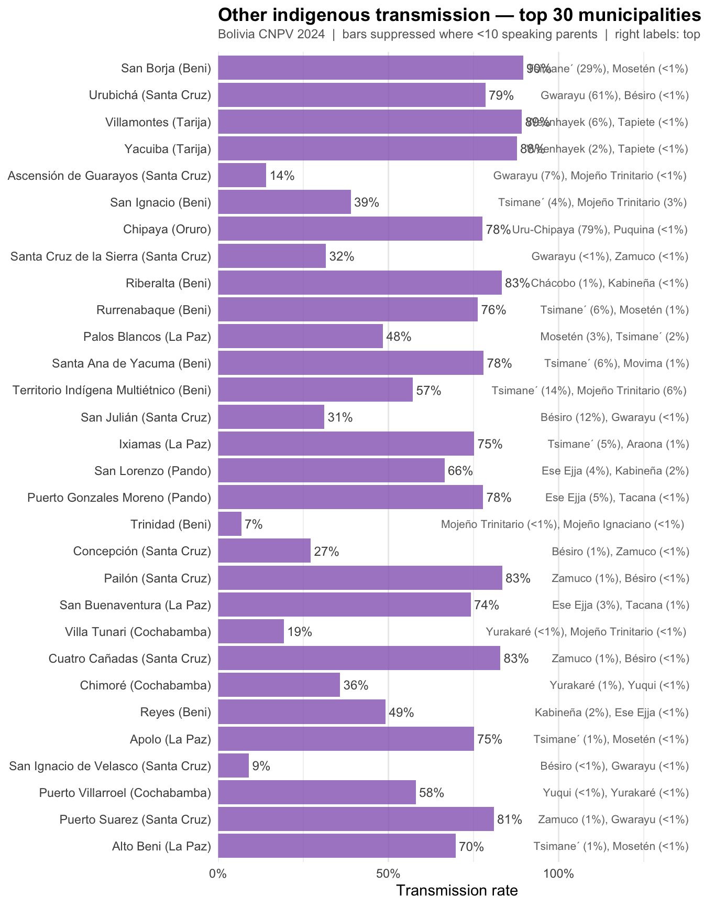
bubble_chart(other_transmission_clean, "n_speakers_other", "Other indigenous", "#9467bd",
muni_pop_all, min_parents = 10)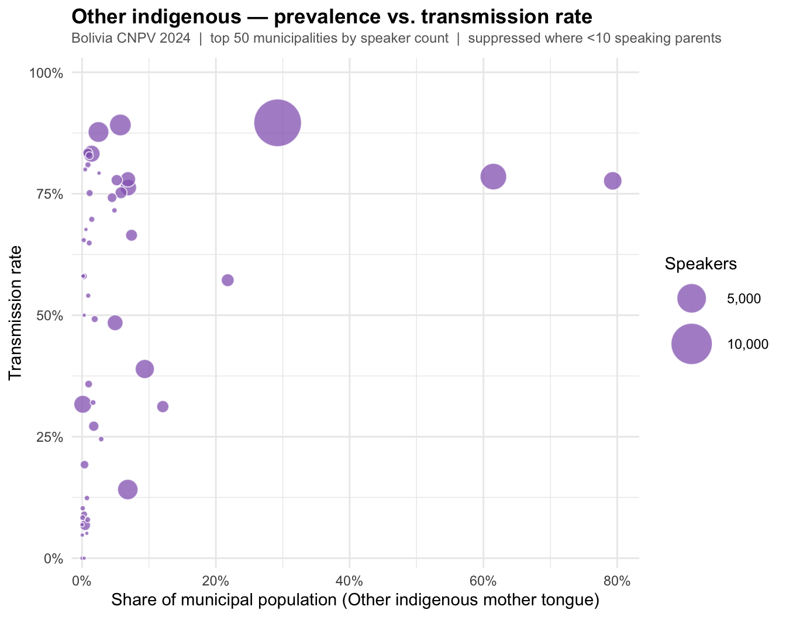
Combined: prevalence vs. transmission rate
lang_colors <- c(
"Aymara" = "#d62728",
"Quechua" = "#ff7f0e",
"Guaraní" = "#2ca02c",
"Other indigenous" = "#9467bd"
)
bind_rows(
aymara_transmission_clean |>
filter(!is.na(n_speakers_aymara), n_children_with_parent >= 100) |>
slice_max(n_speakers_aymara, n = 50) |>
transmute(muni_code, language = "Aymara",
n_speakers = n_speakers_aymara, transmission_rate),
quechua_transmission_clean |>
filter(!is.na(n_speakers_quechua), n_children_with_parent >= 100) |>
slice_max(n_speakers_quechua, n = 50) |>
transmute(muni_code, language = "Quechua",
n_speakers = n_speakers_quechua, transmission_rate),
guarani_transmission_clean |>
filter(!is.na(n_speakers_guarani), n_children_with_parent >= 20) |>
slice_max(n_speakers_guarani, n = 50) |>
transmute(muni_code, language = "Guaraní",
n_speakers = n_speakers_guarani, transmission_rate),
other_transmission_clean |>
filter(!is.na(n_speakers_other), n_children_with_parent >= 10) |>
slice_max(n_speakers_other, n = 50) |>
transmute(muni_code, language = "Other indigenous",
n_speakers = n_speakers_other, transmission_rate)
) |>
left_join(muni_pop_all, by = "muni_code") |>
mutate(
speaker_share = n_speakers / n_total,
language = factor(language, levels = names(lang_colors))
) |>
ggplot(aes(x = speaker_share, y = transmission_rate,
size = n_speakers, color = language)) +
geom_point(alpha = 0.65) +
scale_x_continuous(
labels = scales::percent_format(accuracy = 1),
expand = expansion(mult = c(0.02, 0.05))
) +
scale_y_continuous(
labels = scales::percent_format(accuracy = 1),
limits = c(0, 1),
expand = expansion(mult = c(0.02, 0.03))
) +
scale_size(
range = c(2, 10),
trans = "sqrt",
labels = scales::comma,
name = "Speakers"
) +
scale_color_manual(values = lang_colors, name = NULL) +
labs(
title = "Language prevalence vs. transmission rate — all four language groups",
subtitle = "Bolivia CNPV 2024 | top 50 municipalities per language by speaker count",
x = "Share of municipal population (mother tongue)",
y = "Transmission rate"
) +
theme_minimal(base_size = 11) +
theme(
plot.title = element_text(face = "bold", margin = margin(b = 3)),
plot.subtitle = element_text(color = "grey40", size = rel(0.82), margin = margin(b = 8)),
legend.position = "right"
)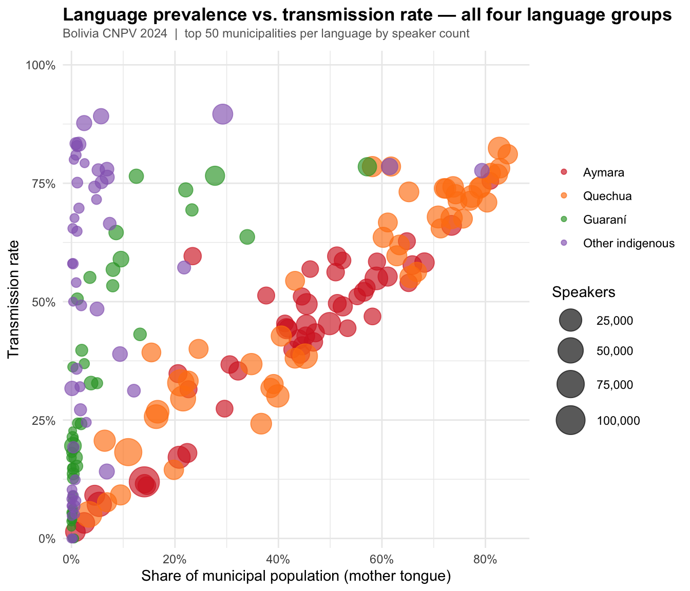
Transmission by Albó-Romero municipality group
albo_classify <- function(cel_5plus, cel_4plus, cel_2plus) {
dplyr::case_when(
cel_5plus >= 0.90 & cel_4plus >= 0.90 & cel_2plus >= 0.90 ~ "A",
cel_5plus > 0.67 & cel_4plus > 0.80 & cel_2plus > 0.90 ~ "B",
cel_5plus > 0.50 & cel_4plus > 0.67 & cel_2plus > 0.67 ~ "C",
cel_5plus > 0.33 & cel_4plus > 0.50 & cel_2plus > 0.67 ~ "D",
cel_2plus > 0.75 ~ "E",
cel_2plus > 0.50 ~ "F",
cel_2plus > 0.33 ~ "G",
cel_2plus > 0.10 ~ "H",
TRUE ~ "I"
)
}
cel_geo_muni <- cel_geo |>
# Use aggregate (non-stratified) rows only
filter(!is.na(municipality), is.na(urban_rural)) |>
mutate(
muni_code = sprintf("%02d%02d%02d", department, province, municipality),
albo_group = albo_classify(cel_5plus / 100, cel_4plus / 100, cel_2plus / 100)
) |>
select(muni_code, albo_group) |>
distinct()
by_albo <- function(df, speak_col, parent_col, speaker_col) {
df |>
left_join(cel_geo_muni, by = "muni_code") |>
filter(!is.na(albo_group)) |>
group_by(albo_group) |>
summarise(
n_municipalities = n(),
n_total_speakers = sum(.data[[speaker_col]], na.rm = TRUE),
n_total_parents = sum(.data[[parent_col]], na.rm = TRUE),
n_total_children = sum(n_children_with_parent, na.rm = TRUE),
n_speaking = sum(.data[[speak_col]], na.rm = TRUE),
transmission_median = median(transmission_rate, na.rm = TRUE),
transmission_mean = mean(transmission_rate, na.rm = TRUE),
transmission_q25 = quantile(transmission_rate, 0.25, na.rm = TRUE),
transmission_q75 = quantile(transmission_rate, 0.75, na.rm = TRUE),
.groups = "drop"
) |>
arrange(factor(albo_group, levels = c("A","B","C","D","E","F","G","H","I")))
}
aymara_by_albo <- by_albo(aymara_transmission_clean,
"n_children_speak_aymara", "n_parents_aymara", "n_speakers_aymara")
quechua_by_albo <- by_albo(quechua_transmission_clean,
"n_children_speak_quechua", "n_parents_quechua", "n_speakers_quechua")
guarani_by_albo <- by_albo(guarani_transmission_clean,
"n_children_speak_guarani", "n_parents_guarani", "n_speakers_guarani")
other_by_albo <- by_albo(other_transmission_clean,
"n_children_speak_other", "n_parents_other", "n_speakers_other")albo_levels <- c("B","C","D","E","F","G","H","I")
lang_colors <- c(
"Aymara" = "#d62728",
"Quechua" = "#ff7f0e",
"Guaraní" = "#2ca02c",
"Other" = "#9467bd"
)
albo_compare <- bind_rows(
aymara_by_albo |> mutate(language = "Aymara"),
quechua_by_albo |> mutate(language = "Quechua"),
guarani_by_albo |> mutate(language = "Guaraní"),
other_by_albo |> mutate(language = "Other")
) |>
filter(albo_group %in% albo_levels) |>
mutate(
albo_group = factor(albo_group, levels = albo_levels),
language = factor(language, levels = names(lang_colors))
)
ggplot(albo_compare, aes(x = albo_group, y = transmission_median, fill = language)) +
geom_col(position = "dodge", width = 0.75, alpha = 0.85) +
geom_errorbar(
aes(ymin = transmission_q25, ymax = transmission_q75),
position = position_dodge(0.75),
width = 0.25, linewidth = 0.7, color = "grey40"
) +
scale_fill_manual(values = lang_colors) +
scale_y_continuous(
labels = scales::percent_format(),
expand = expansion(mult = c(0, 0.05))
) +
labs(
title = "Intergenerational language transmission by Albó-Romero municipality group",
subtitle = "% of children with a language-speaking parent who speak that language themselves\nMedian with interquartile range | Bolivia CNPV 2024",
x = "Albó-Romero municipality group",
y = "Transmission rate (median)",
fill = NULL
) +
theme_minimal(base_size = 12) +
theme(
plot.title = element_text(face = "bold", margin = margin(b = 4)),
plot.subtitle = element_text(color = "grey40", size = rel(0.85), margin = margin(b = 10)),
panel.grid.major.x = element_blank(),
panel.grid.minor.y = element_blank(),
legend.position = "bottom"
)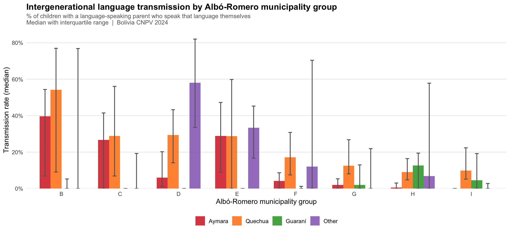
The Albó-Romero classification captures a sharp gradient for Aymara and Quechua, but the pattern for Guaraní and other lowland languages is structurally different:
- Aymara and Quechua follow the expected gradient — transmission collapses as CEL concentration falls. Group B: Aymara 40%, Quechua 54%. Groups F–I: Aymara near zero, Quechua 7–17%.
- Guaraní shows near-zero transmission in Groups B–F (which are Andean municipalities where almost no Guaraní speakers live) and rises only in Groups G–H — the Chaco lowland municipalities where Guaraní communities are actually located. The Albó grouping is calibrated to Andean populations and does not capture Guaraní community strength.
- Other indigenous languages show a similarly non-monotonic pattern, peaking in Groups D–E, which happen to include isolated lowland municipalities with strong small-language communities (e.g. Tsimane´, Chiquitano, Moxeño territory). The median near zero in several groups reflects that few municipalities in those groups have meaningful speaker populations for any single “other” language.
- The consistently higher national rates for Guaraní (56%) and other languages (68%) relative to Aymara and Quechua are partly a selection effect: smaller languages survive in more isolated communities, and it is precisely those communities that remain in the dataset.